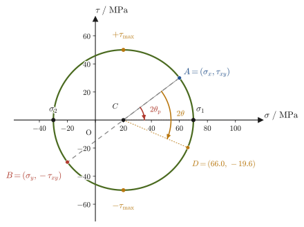
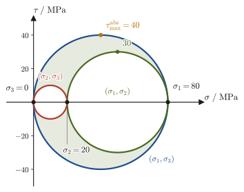
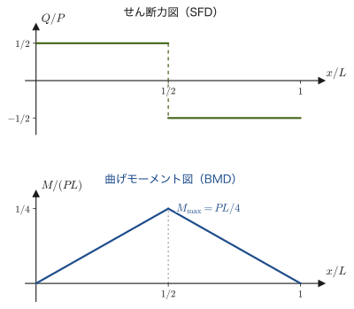
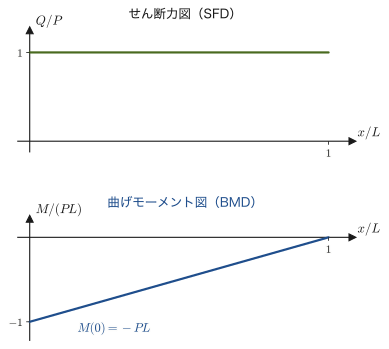
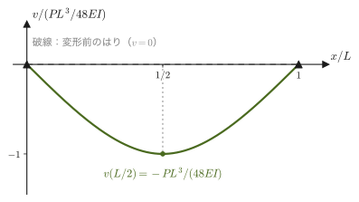

第20章多軸応力・はりの曲げ・ねじり
ここまでの第18章・第19章では，棒を1方向にまっすぐ引っぱる・押す，という単純な状況だけを考えてきた．高校物理で学んだ応力 $\sigma=P/A$（力÷断面積）も，ひずみ $\varepsilon$ も，1本の数直線上の量（スカラー）として扱えば十分だった．しかし，実際の橋の桁，飛行機の翼の付け根，回転するシャフトの中では，物体のある一点は，1方向だけでなく色々な向きから同時に押されたり引っぱられたりせん断されたりしている．しかも，見る向き（どの断面で切って考えるか）を変えると，そこに現れる垂直応力・せん断応力の値そのものが変わってしまう．「この材料は何 $\mathrm{MPa}$ まで耐えられるか」を正しく評価するには，向きによらない「その点でいちばん厳しい応力の値」——主応力——を求める方法が必要になる．本章の前半（20.1–20.4節）は，この「多軸応力」の考え方の基礎を整える．
後半（20.5–20.7節）では，工学でもっとも頻繁に現れる2つの部材——はり（beam，橋桁や棚板のように，横から荷重を受けて曲がる部材）と，軸（shaft，モーターの回転軸のように，ねじりを受ける部材）——を扱う．この2つは，断面の中で応力が場所ごとに変わる応力分布の典型例である．はりの中では，曲げによって断面の片側が引張，反対側が圧縮になり，応力は中立軸からの距離に比例して直線的に変化する．軸の中では，ねじりによってせん断応力が中心からの距離に比例して変化し，軸の表面では前半で学ぶ主応力の考え方がそのまま使える（純粋せん断状態）．どちらも，「断面の中で応力がどう分布しているか」を積分によって求め，そこから「外から加えた荷重・モーメントと，中に生じる応力・変形との関係」を導く，という同じ論理の型で組み立てられている．
高校物理とのつながりを先に挙げておこう．(1) $\sigma=P/A$ は，断面の向きを自由に変えると，行列（応力テンソル）に拡張される．(2) 動力 $P=Fv$（力×速さ）は，回転する軸では $P=T\omega$（トルク×角速度）になる．(3) ばねにたくわえられる弾性エネルギー $\frac12kx^2$ は，連続体では単位体積あたりのひずみエネルギー密度になる．「一様な応力」のイメージから一歩進み，「向きによって変わる応力」と「断面の中で値が変化する応力分布」を扱うのが本章の主眼である．
本章は，材料力学の標準的な教科書に沿って書いた章で，内容の正確さは章末の参考文献に挙げる定番の教科書に基づいている．
- 応力を3方向×3方向の行列（応力テンソル）として捉え，モーメントのつり合いから対称性 $\tau_{xy}=\tau_{yx}$ が出ることを示す
- 断面の向きを変えたときの垂直応力・せん断応力の変換公式と，向きによらない最大・最小の垂直応力（主応力）が応力テンソルの固有値であること（3次元では3つの主応力，絶対最大せん断応力）
- 主応力・最大せん断応力を図形的に求める方法（モールの応力円）
- 1方向だけでなく複数方向の応力がある場合のフックの法則（一般化されたフックの法則，体積ひずみ，平面応力と平面ひずみ），温度変化によって生じる熱ひずみ・熱応力，材料にたくわえられるひずみエネルギー
- はりの曲げ応力 $\sigma=My/I$ と，断面二次モーメント $I$（長方形 $bh^3/12$，円 $\pi d^4/64$），断面係数 $Z$
- せん断力図・曲げモーメント図の描き方と，たわみの微分方程式・たわみの数値計算，セラミックスの強度試験に使う3点曲げ・4点曲げ強さ
- 円形断面の軸のねじり応力 $\tau=Tr/J$，ねじれ角，軸が伝える動力 $P=T\omega$
もとにしたノート：本章はノートにない内容を補った章である．関連するノート：望月泰英『物理学ノート 材料力学』（手書き講義ノート，全6ページ）．
20.1 応力テンソルとその対称性
第18章では，棒を軸方向に引っぱる荷重 $P$ に対して，応力を $\sigma=P/A$（断面 $A$ に垂直な方向の力を，その面積で割ったもの）という1つの数で表した．これは，「棒を，軸に垂直な断面で切って考える」という，切り方が最初から1通りに決まっている特別な状況だからこそ許された簡単化である．一般には，物体のある点を通る断面は，向きを自由に選べる（水平に切る，斜めに切る，縦に切る，……）．同じ点でも，どの向きの断面で切るかによって，その断面に現れる垂直応力・せん断応力の値は変わる．したがって，「その点における応力の状態」を過不足なく指定するには，「どの向きの断面か」と「その面上のどの方向の力の成分か」という2つの方向を指定してはじめて1つの数値が決まる，という量を扱う必要がある．方向を1つ指定すれば決まる量（大きさと向きをもつ）がベクトルであったのに対し，方向を2つ指定してはじめて決まるこの種の量を，2階のテンソル（second-rank tensor）という（第10章で少し触れた，回転運動における慣性テンソルも同じ仲間の量である）．
物体内部のある点を含む微小な直方体（辺の長さ $\dd x,\dd y,\dd z$）を考え，その6つの面に生じる応力を書き出してみよう．$x$ 軸に垂直な面（法線が $x$ 方向を向く面）には，$x$ 方向の垂直応力 $\sigma_x$（またはくどく書けば $\sigma_{xx}$）のほかに，面内の $y$ 方向・$z$ 方向へのせん断応力 $\tau_{xy},\tau_{xz}$ が生じうる．同様に $y$ 軸に垂直な面には $\sigma_y,\tau_{yx},\tau_{yz}$ が，$z$ 軸に垂直な面には $\sigma_z,\tau_{zx},\tau_{zy}$ が生じうる．せん断応力の添字は「1文字目：面の法線方向，2文字目：応力の向いている方向」という約束で読む（たとえば $\tau_{xy}$ は，法線が $x$ を向く面に生じる，$y$ 方向のせん断応力）．符号の約束は第18章と同じく，垂直応力は引張を正・圧縮を負とする．全部で9個の数値が集まり，これを3行3列の行列（正方行列）の形にまとめたものを応力テンソルという．
定義20.1 応力テンソル
物体内のある点における応力の状態は，直交する3方向 $x,y,z$ に垂直な3つの面それぞれに生じる垂直応力・せん断応力を並べた，次の3次正方行列（応力テンソル，stress tensor）によって指定される．
\begin{equation} \bm{\sigma}=\begin{pmatrix}\sigma_x&\tau_{xy}&\tau_{xz}\\ \tau_{yx}&\sigma_y&\tau_{yz}\\ \tau_{zx}&\tau_{zy}&\sigma_z\end{pmatrix} \label{eq:20-stress-tensor-def} \end{equation}対角成分 $\sigma_x,\sigma_y,\sigma_z$ は各面に垂直な方向の垂直応力，非対角成分 $\tau_{ij}\ (i\neq j)$ は面内方向のせん断応力である．任意の向きの断面に生じる応力は，この9個（実際には後で示すように6個）の成分から計算できる．
注意：せん断応力の符号
垂直応力は引張を正とした．せん断応力の符号は，次のように約束する：正の面（法線が座標軸の正の向きを向く面）では座標軸の正の向きを正とし，負の面（法線が座標軸の負の向きを向く面）ではその逆の向きを正とする．たとえば，法線が $+x$ を向く面（図20.1の右面）では $+y$ 向きの $\tau_{xy}$ が正，法線が $-x$ を向く面（左面）では $-y$ 向きが正である．このように約束しておけば，$\tau_{xy}$ という1つの数が，要素の反対側の面にはたらく，向きが逆で大きさの等しい一対のせん断力を同時に表すことになる（作用・反作用の関係）．20.3節のモールの応力円で $\tau$ の符号を読むときも，この約束にしたがう．
導出：せん断応力の対称性 $\tau_{xy}=\tau_{yx}$
図20.1の要素（$x$ 方向の辺の長さ $\dd x$，$y$ 方向の辺の長さ $\dd y$，奥行き $\dd z$）について，中心を通り $z$ 軸に平行な軸のまわりのモーメントのつり合いを考える．右面・左面に作用するせん断応力 $\tau_{xy}$ は，面積 $\dd y\,\dd z$ に力の大きさとしてはたらき，中心からの距離（腕の長さ）は $\dd x/2$ なので，右面・左面それぞれのモーメントの大きさは
$$ (\tau_{xy}\,\dd y\,\dd z)\times\frac{\dd x}{2} $$であり，左右の面は同じ向き（この要素を回転させる向き）にモーメントを及ぼすので，合計は $\tau_{xy}\,\dd x\,\dd y\,\dd z$ となる．同様に，上面・下面に作用するせん断応力 $\tau_{yx}$ は，面積 $\dd x\,\dd z$ にはたらき，腕の長さは $\dd y/2$ なので，合計のモーメントの大きさは $\tau_{yx}\,\dd x\,\dd y\,\dd z$ となる．この2組のモーメントは，図20.1のように，右面・左面の $\tau_{xy}$ が要素を反時計回りに，上面・下面の $\tau_{yx}$ が時計回りに回そうとする向きにはたらくので，互いに逆向きになる．要素にはたらく正味のモーメントは，回転運動方程式（第10章）にしたがって要素を角加速度で回転させるはずだが，要素の慣性モーメントは辺の長さの5乗程度（$\propto\dd x\,\dd y\,\dd z\times(\dd x^2+\dd y^2)$）で，モーメント自体（辺の長さの3乗程度，$\propto\dd x\,\dd y\,\dd z$）よりずっと速く0に近づく．したがって，要素を点（$\dd x,\dd y,\dd z\to0$）に縮めていく極限では，正味のモーメントそのものが恒等的に0でなければならない：
$$ \tau_{xy}\,\dd x\,\dd y\,\dd z-\tau_{yx}\,\dd x\,\dd y\,\dd z=0 \quad\Longrightarrow\quad \tau_{xy}=\tau_{yx} $$（導出終わり）
法則20.1 応力テンソルの対称性
物体内の各点にモーメントを及ぼす外力（体積力対偶）がはたらいていない通常の状況では，応力テンソルは対称行列である：
\begin{equation} \tau_{xy}=\tau_{yx},\qquad \tau_{yz}=\tau_{zy},\qquad \tau_{zx}=\tau_{xz} \label{eq:20-stress-symmetric} \end{equation}（$xz$ 平面・$yz$ 平面についても，図20.1と全く同じ議論をそれぞれの面内で行えばよい．）したがって，一般の3次元応力状態を指定するのに必要な独立な成分は，9個ではなく6個（$\sigma_x,\sigma_y,\sigma_z,\tau_{xy},\tau_{yz},\tau_{zx}$）である．
イメージ：なぜ「テンソル」という難しそうな量が必要なのか
高校物理で扱う力や速度は，大きさと向きの2つの情報をもつベクトル（1階のテンソル）だった．応力は，それより1段階複雑な量である——「どの向きの面を考えるか」（面の法線方向）と「その面のどの向きの力の成分を見るか」（力の方向）という，独立な2つの方向情報が必要になるからである．表（行と列に数値を並べた数表）で言えば，ベクトルは「1列だけの表」（数値が1列に並ぶ），2階のテンソルは「行と列がある表」（3行3列の数表）に対応する，とイメージするとよい．力学（第10章）で角運動量 $\bm L$ とトルク $\bm N$ を結びつける「慣性モーメント」も，回転軸の向きが一般に変わりうる状況では，方向によって異なる値をもつ慣性テンソルという2階のテンソルになることに触れた．応力テンソルはこれと同じ数学的な仲間の量であり，どちらも，対称な3次正方行列であるために，大学数学 第12章で学んだ「対称行列の固有値・固有ベクトル」の理論がそのまま使える，という共通点をもつ（20.2節）．
例題20.1 応力テンソルの書き下しと対称性の確認
ある点における応力状態が，$\sigma_x=60\ \mathrm{MPa}$（引張），$\sigma_y=-20\ \mathrm{MPa}$（圧縮），$\sigma_z=0$，$\tau_{xy}=30\ \mathrm{MPa}$，$\tau_{yz}=\tau_{zx}=0$ の平面応力状態（$z$ 方向に応力成分をもたない状態）であるとする．応力テンソルを行列の形に書き下せ．
解答 法則20.1の対称性 $\tau_{xy}=\tau_{yx}=30\ \mathrm{MPa}$ を用いて，定義20.1の形に数値を当てはめると，
$$ \bm{\sigma}=\begin{pmatrix}60&30&0\\ 30&-20&0\\ 0&0&0\end{pmatrix}\ \mathrm{MPa} $$となる．$z$ 方向に関する行・列（3行目・3列目）がすべて0であることが，「平面応力（plane stress）」，すなわち応力が実質的に $xy$ 平面内だけで完結している状態を表している．この平面応力の場合を，20.2節以降で詳しく扱う．
20.2 平面応力の座標変換と主応力・最大せん断応力
例題20.1で見たように，$z$ 方向の応力成分がすべて0の状態を平面応力（plane stress）という．板状の部材の表面や，薄い部材の内部でよく現れる状況である．以下，平面応力状態 $(\sigma_x,\sigma_y,\tau_{xy})$ を考え，$xy$ 平面内で座標軸を角 $\theta$（反時計回りを正とする）だけ回転させた新しい軸 $x',y'$ から見ると，垂直応力・せん断応力の値がどう変わるかを調べる．
20.2.1 座標変換公式
新しい軸の向きを表す単位ベクトルは，$x$ 軸から反時計回りに角 $\theta$ だけ回転させたものだから，もとの $xy$ 座標成分で書くと
$$ \bm{e}_{x'}=(\cos\theta,\ \sin\theta),\qquad \bm{e}_{y'}=(-\sin\theta,\ \cos\theta) $$である（大学数学 第16章 16.4節の回転の考え方の復習）．応力テンソル $\bm\sigma$（定義20.1）の基本的な性質として，法線ベクトル $\bm n$ をもつ面に生じる応力（面を垂直に押す・引く力と面内にずらす力を合わせた，単位面積あたりの力のベクトル）$\bm t$ は，行列とベクトルの積 $\bm t=\bm\sigma\bm n$ で与えられる．座標変換公式の導出全体がこの関係に依存するので，まず平面応力の場合について，斜面と2つの座標面でつくる三角柱の力のつり合いから導いておこう．
導出：斜面にはたらく応力ベクトル $\bm t=\bm\sigma\bm n$
図20.2のように，点のまわりから，法線が $\bm n=(\cos\theta,\ \sin\theta)$ の斜面（面積 $\dd A$，奥行きを $\dd z$ として斜面の長さを $\dd s$ とすれば $\dd A=\dd s\,\dd z$）と，法線が $-x$ の面，法線が $-y$ の面でできる小さな三角柱を切り出す．斜面の傾きから，三角形の斜辺 $\dd s$ に対して，$y$ 方向に平行な辺の長さは $\dd s\cos\theta$，$x$ 方向に平行な辺の長さは $\dd s\sin\theta$ である．したがって，法線が $-x$ の面の面積は $\dd A\cos\theta$，法線が $-y$ の面の面積は $\dd A\sin\theta$ となる．
斜面にはたらく単位面積あたりの力（求めたい応力ベクトル）を $\bm t=(t_x,t_y)$ とする．法線が $-x$ の面は，法線が $+x$ の面と作用・反作用の関係にあるので，そこにはたらく単位面積あたりの力は $-(\sigma_x,\ \tau_{xy})$ である（法線が $+x$ の面では $x$ 方向に $\sigma_x$，$y$ 方向に $\tau_{xy}$）．同様に，法線が $-y$ の面では $-(\tau_{xy},\ \sigma_y)$ である．三角柱にはたらく力のつり合い（体積力や慣性力は体積に比例して辺の長さの3乗のオーダーなので，面積に比例する辺の長さの2乗のオーダーの面の力に比べて，三角柱を小さくする極限では無視できる）を成分ごとに書くと，
$$ \begin{aligned} x\text{ 方向：}&\quad t_x\,\dd A-\sigma_x\,(\dd A\cos\theta)-\tau_{xy}\,(\dd A\sin\theta)=0\\ y\text{ 方向：}&\quad t_y\,\dd A-\tau_{xy}\,(\dd A\cos\theta)-\sigma_y\,(\dd A\sin\theta)=0 \end{aligned} $$となる．両辺を $\dd A$ で割ると，
$$ \begin{pmatrix}t_x\\ t_y\end{pmatrix}=\begin{pmatrix}\sigma_x\cos\theta+\tau_{xy}\sin\theta\\ \tau_{xy}\cos\theta+\sigma_y\sin\theta\end{pmatrix}=\begin{pmatrix}\sigma_x&\tau_{xy}\\ \tau_{xy}&\sigma_y\end{pmatrix}\begin{pmatrix}\cos\theta\\ \sin\theta\end{pmatrix} $$すなわち $\bm t=\bm\sigma\bm n$ である．（3次元でも，四面体を使って全く同じ議論ができ，$\bm t=\bm\sigma\bm n$ が成り立つ．）
（導出終わり）
導出：座標変換公式
新しい $x'$ 軸方向の面（法線 $\bm n=\bm e_{x'}$）に生じる応力ベクトルは
$$ \bm t=\bm\sigma\bm e_{x'}=\begin{pmatrix}\sigma_x&\tau_{xy}\\ \tau_{xy}&\sigma_y\end{pmatrix}\begin{pmatrix}\cos\theta\\ \sin\theta\end{pmatrix}=\begin{pmatrix}\sigma_x\cos\theta+\tau_{xy}\sin\theta\\ \tau_{xy}\cos\theta+\sigma_y\sin\theta\end{pmatrix} $$である．この面に生じる垂直応力 $\sigma_{x'}$ は，応力ベクトル $\bm t$ の $x'$ 方向成分（$\bm t\cdot\bm e_{x'}$），せん断応力 $\tau_{x'y'}$ は $y'$ 方向成分（$\bm t\cdot\bm e_{y'}$）である：
$$ \sigma_{x'}=\bm t\cdot\bm e_{x'}=(\sigma_x\cos\theta+\tau_{xy}\sin\theta)\cos\theta+(\tau_{xy}\cos\theta+\sigma_y\sin\theta)\sin\theta =\sigma_x\cos^2\theta+\sigma_y\sin^2\theta+2\tau_{xy}\sin\theta\cos\theta $$ $$ \tau_{x'y'}=\bm t\cdot\bm e_{y'}=-(\sigma_x\cos\theta+\tau_{xy}\sin\theta)\sin\theta+(\tau_{xy}\cos\theta+\sigma_y\sin\theta)\cos\theta =(\sigma_y-\sigma_x)\sin\theta\cos\theta+\tau_{xy}(\cos^2\theta-\sin^2\theta) $$ここで倍角の公式 $\cos^2\theta=\dfrac{1+\cos2\theta}2,\ \sin^2\theta=\dfrac{1-\cos2\theta}2,\ 2\sin\theta\cos\theta=\sin2\theta,\ \cos^2\theta-\sin^2\theta=\cos2\theta$（高校数学，高校数学 第5章）を使って整理すると，次の形にまとまる：
\begin{equation} \sigma_{x'}=\frac{\sigma_x+\sigma_y}{2}+\frac{\sigma_x-\sigma_y}{2}\cos2\theta+\tau_{xy}\sin2\theta \label{eq:20-transform-sigma} \end{equation} \begin{equation} \tau_{x'y'}=-\frac{\sigma_x-\sigma_y}{2}\sin2\theta+\tau_{xy}\cos2\theta \label{eq:20-transform-tau} \end{equation}$\sigma_{y'}$ は，式\eqref{eq:20-transform-sigma}で $\theta\to\theta+90°$（$\cos2\theta\to-\cos2\theta,\ \sin2\theta\to-\sin2\theta$）と置き換えれば得られる：$\sigma_{y'}=\dfrac{\sigma_x+\sigma_y}2-\dfrac{\sigma_x-\sigma_y}2\cos2\theta-\tau_{xy}\sin2\theta$．これと式\eqref{eq:20-transform-sigma}を足すと $\sigma_{x'}+\sigma_{y'}=\sigma_x+\sigma_y$（$\theta$ によらない一定値）となり，どの向きに切っても垂直応力の和が変わらないことがわかる（これを応力の不変量という）．
（導出終わり）
公式20.1 平面応力の座標変換公式
平面応力状態 $(\sigma_x,\sigma_y,\tau_{xy})$ を，$x$ 軸から反時計回りに角 $\theta$ だけ回転した軸 $x',y'$ から見ると，
\begin{equation} \sigma_{x'}=\frac{\sigma_x+\sigma_y}{2}+\frac{\sigma_x-\sigma_y}{2}\cos2\theta+\tau_{xy}\sin2\theta,\qquad \tau_{x'y'}=-\frac{\sigma_x-\sigma_y}{2}\sin2\theta+\tau_{xy}\cos2\theta \label{eq:20-transform-summary} \end{equation}$\sigma_{y'}$ は式\eqref{eq:20-transform-summary}の $\sigma_{x'}$ の式で $\theta\to\theta+90°$ としたものであり，常に $\sigma_{x'}+\sigma_{y'}=\sigma_x+\sigma_y$ が成り立つ．
20.2.2 主応力 — 応力テンソルの固有値
式\eqref{eq:20-transform-summary}を見ると，$\theta$ を動かすと $\sigma_{x'}$ は $\cos2\theta,\sin2\theta$ の分だけ振動し，ある特定の向きで最大値・最小値をとることがわかる．垂直応力が極値をとり，かつせん断応力 $\tau_{x'y'}$ がちょうど0になる特別な面の向きを主応力面，そのときの垂直応力を主応力（principal stress）という．
主応力を求めるには，$\tau_{x'y'}=0$ とおいて式\eqref{eq:20-transform-summary}を解いてもよいが，ここでは大学数学 第12章で学んだ固有値の考え方を使う方が見通しがよい．新しい軸 $x'$ が主応力面の法線方向であるとは，その面にせん断応力がなく，応力ベクトル $\bm t=\bm\sigma\bm n$ が法線 $\bm n$ とちょうど同じ向き（大きさ $\lambda$ 倍）になっているということ，つまり
$$ \bm\sigma\bm n=\lambda\bm n $$を意味する．これはまさに，行列 $\bm\sigma$ の固有値 $\lambda$ と固有ベクトル $\bm n$ を求める方程式そのものである（大学数学 第12章 12.1節の定義）．したがって，主応力は応力テンソルの固有値，主応力面の法線方向は対応する固有ベクトルの方向である．
導出：平面応力の主応力の公式
固有値は特性方程式 $\det(\bm\sigma-\lambda I)=0$（大学数学 第12章 12.2節）の解として求まる：
$$ \det\begin{pmatrix}\sigma_x-\lambda&\tau_{xy}\\ \tau_{xy}&\sigma_y-\lambda\end{pmatrix}=(\sigma_x-\lambda)(\sigma_y-\lambda)-\tau_{xy}^2=0 $$展開すると，
$$ \lambda^2-(\sigma_x+\sigma_y)\lambda+(\sigma_x\sigma_y-\tau_{xy}^2)=0 $$という $\lambda$ の2次方程式になる．解の公式を使うと，
$$ \lambda=\frac{(\sigma_x+\sigma_y)\pm\sqrt{(\sigma_x+\sigma_y)^2-4(\sigma_x\sigma_y-\tau_{xy}^2)}}{2} $$根号の中身を整理すると $(\sigma_x+\sigma_y)^2-4\sigma_x\sigma_y+4\tau_{xy}^2=(\sigma_x-\sigma_y)^2+4\tau_{xy}^2$ となるので，
\begin{equation} \sigma_{1,2}=\frac{\sigma_x+\sigma_y}{2}\pm\sqrt{\left(\frac{\sigma_x-\sigma_y}{2}\right)^2+\tau_{xy}^2} \label{eq:20-principal-stress} \end{equation}が得られる（大きいほうを $\sigma_1$，小さいほうを $\sigma_2$ とする最大・最小主応力）．対称行列の固有値は必ず実数である（大学数学 第12章 12.2節）ことに対応して，根号の中身 $\left(\frac{\sigma_x-\sigma_y}2\right)^2+\tau_{xy}^2$ は2つの実数の2乗の和なので常に0以上であり，$\sigma_{1,2}$ はいつでも実数になる．
主応力面の向き $\theta_{\mathrm p}$ は，座標変換公式から直接求めることもできる．式\eqref{eq:20-transform-summary}の $\sigma_{x'}$ を $\theta$ で微分すると，
$$ \diff{\sigma_{x'}}{\theta}=-(\sigma_x-\sigma_y)\sin2\theta+2\tau_{xy}\cos2\theta=2\left[-\frac{\sigma_x-\sigma_y}{2}\sin2\theta+\tau_{xy}\cos2\theta\right]=2\tau_{x'y'} $$となる（最後の等号は式\eqref{eq:20-transform-summary}の $\tau_{x'y'}$ との比較）．したがって，垂直応力 $\sigma_{x'}$ が極値をとる面は，まさにせん断応力 $\tau_{x'y'}$ が0になる面であり，主応力面の定義（せん断応力が0）と矛盾しない．$\tau_{x'y'}=0$ を $\theta_{\mathrm p}$ について解くと，$-\dfrac{\sigma_x-\sigma_y}2\sin2\theta_{\mathrm p}+\tau_{xy}\cos2\theta_{\mathrm p}=0$ より
\begin{equation} \tan2\theta_{\mathrm p}=\frac{2\tau_{xy}}{\sigma_x-\sigma_y} \label{eq:20-principal-angle} \end{equation}となる．この角度での $\sigma_{x'}$ の値が式\eqref{eq:20-principal-stress}と一致することを確かめよう．$a\equiv\dfrac{\sigma_x-\sigma_y}2,\ b\equiv\tau_{xy},\ r\equiv\sqrt{a^2+b^2}$ とおくと，$\tan2\theta_{\mathrm p}=b/a$ を満たす $2\theta_{\mathrm p}$ は $180°$ ずれた2つがあり，直角三角形（対辺 $b$，隣辺 $a$，斜辺 $r$）から，
$$ (\cos2\theta_{\mathrm p},\ \sin2\theta_{\mathrm p})=\pm\left(\frac ar,\ \frac br\right) $$である．これを式\eqref{eq:20-transform-summary}の $\sigma_{x'}=\dfrac{\sigma_x+\sigma_y}2+a\cos2\theta+b\sin2\theta$ に代入すると，
$$ \sigma_{x'}=\frac{\sigma_x+\sigma_y}2\pm\left(a\cdot\frac ar+b\cdot\frac br\right)=\frac{\sigma_x+\sigma_y}2\pm\frac{a^2+b^2}{r}=\frac{\sigma_x+\sigma_y}2\pm r $$となり，$r=\sqrt{\left(\frac{\sigma_x-\sigma_y}2\right)^2+\tau_{xy}^2}$ なので，式\eqref{eq:20-principal-stress}とちょうど一致する．固有値による方法と，せん断応力を0にする角度を探す方法という，一見別々のアプローチが同じ答えに到達する．また，$\tan2\theta_{\mathrm p}$ の解として $\theta_{\mathrm p}$ と $\theta_{\mathrm p}+90°$ の2つの主応力面があり，上の計算から，上側の符号（$\cos2\theta_{\mathrm p}=a/r,\ \sin2\theta_{\mathrm p}=b/r$）をとる面が最大主応力 $\sigma_1$ の面，$90°$ 回った面が最小主応力 $\sigma_2$ の面である（例題20.2でこの見分け方を使う）．
（導出終わり）
法則20.2 主応力の公式
平面応力状態 $(\sigma_x,\sigma_y,\tau_{xy})$ における2つの主応力は，応力テンソルの固有値として，
\begin{equation} \sigma_{1,2}=\frac{\sigma_x+\sigma_y}{2}\pm\sqrt{\left(\frac{\sigma_x-\sigma_y}{2}\right)^2+\tau_{xy}^2} \label{eq:20-principal-stress-law} \end{equation}で与えられ，そのときの面の向き（$x$ 軸から測った角）は $\tan2\theta_{\mathrm p}=\dfrac{2\tau_{xy}}{\sigma_x-\sigma_y}$ である．主応力面には，定義よりせん断応力がはたらかない．
20.2.3 最大せん断応力（面内）
せん断応力 $\tau_{x'y'}$（式\eqref{eq:20-transform-summary}）も，$\theta$ を動かすと極大・極小をもつ．$\dfrac{\dd\tau_{x'y'}}{\dd\theta}=-(\sigma_x-\sigma_y)\cos2\theta-2\tau_{xy}\sin2\theta=0$ とおくと，極値をとる角 $\theta_{\mathrm s}$ は
$$ \tan2\theta_{\mathrm s}=-\frac{\sigma_x-\sigma_y}{2\tau_{xy}} $$を満たす．これは，式\eqref{eq:20-principal-angle}の $\tan2\theta_{\mathrm p}$ と比べると，$\tan2\theta_{\mathrm s}\times\tan2\theta_{\mathrm p}=-1$ の関係——すなわち $2\theta_{\mathrm s}$ と $2\theta_{\mathrm p}$ が直角違いである（高校数学の加法定理より $\tan(\alpha+90°)=-1/\tan\alpha$ なので，$\tan\alpha\tan\beta=-1$ となるのは $\alpha$ と $\beta$ が $90°$ 違うとき）——を満たしており，$\theta_{\mathrm s}=\theta_{\mathrm p}\pm45°$，つまり最大せん断応力が生じる面は，主応力面からちょうど $45°$ 傾いた面であることがわかる．
この面でのせん断応力の大きさを求めよう．上の記号 $a,b,r$ を使い，$(\cos2\theta_{\mathrm p},\sin2\theta_{\mathrm p})=(a/r,\ b/r)$ とすると，$2\theta_{\mathrm s}=2\theta_{\mathrm p}-90°$ のとき $\cos2\theta_{\mathrm s}=\sin2\theta_{\mathrm p}=b/r,\ \sin2\theta_{\mathrm s}=-\cos2\theta_{\mathrm p}=-a/r$（三角関数の $90°$ ずらしの公式）となる．これを式\eqref{eq:20-transform-summary}に代入すると，
$$ \tau_{x'y'}=-a\sin2\theta_{\mathrm s}+b\cos2\theta_{\mathrm s}=-a\cdot\left(-\frac ar\right)+b\cdot\frac br=\frac{a^2+b^2}{r}=r,\qquad \sigma_{x'}=\frac{\sigma_x+\sigma_y}2+a\cdot\frac br+b\cdot\left(-\frac ar\right)=\frac{\sigma_x+\sigma_y}2 $$である（$2\theta_{\mathrm s}=2\theta_{\mathrm p}+90°$ の面では符号だけが逆の $-r$ になる）．したがって，この面の最大せん断応力の大きさは式\eqref{eq:20-principal-stress-law}の根号の部分そのものであり，2つの主応力の差の半分に等しい：
\begin{equation} \tau_{\max}=\sqrt{\left(\frac{\sigma_x-\sigma_y}{2}\right)^2+\tau_{xy}^2}=\frac{\sigma_1-\sigma_2}{2} \label{eq:20-max-shear} \end{equation}また，最大せん断応力の面には，垂直応力 $(\sigma_x+\sigma_y)/2$（2つの主応力の平均値）が同時にはたらく．
注意：式\eqref{eq:20-max-shear}は「$xy$ 面内」の最大せん断応力
式\eqref{eq:20-max-shear}が与えるのは，$xy$ 平面に垂直な（法線が $xy$ 面内にある）面の中での最大せん断応力である．平面応力では $z$ 方向にも「応力が0」という主応力 $\sigma_3=0$ があり，これを含めて考えると，$\sigma_1,\sigma_2$ が同符号のとき，面内の値よりも大きなせん断応力が別の面に生じる．たとえば $\sigma_1=80\ \mathrm{MPa},\ \sigma_2=20\ \mathrm{MPa}$ なら，面内の最大せん断応力は $(80-20)/2=30\ \mathrm{MPa}$ だが，$\sigma_3=0$ を使った $(80-0)/2=40\ \mathrm{MPa}$ の面がある（次の20.2.4項）．$\sigma_1$ と $\sigma_2$ が異符号（たとえば例題20.2 や，ねじりを受ける軸の表面）なら，面内の値がそのまま最大になる．
イメージ：なぜ切り方によって「危険さ」が変わるのか
金属のような延性材料は，最大せん断応力（正確には次の20.2.4項の絶対最大せん断応力）の面に沿ってすべり（転位運動）が起きて降伏することが多く，一方セラミックスやガラスのような脆性材料は，最大の引張主応力に垂直な面でぱっくり割れることが多い（第21章で詳しく学ぶ，き裂は最大主応力に垂直な向きに進展しようとする）．同じ応力状態でも，材料の壊れ方に応じて「主応力（垂直応力の極値）」と「最大せん断応力」のどちらに注目すべきかが変わる，という点は，材料選定や強度評価の実務でもたびたび現れる考え方である．
例題20.2 主応力と最大せん断応力の計算
例題20.1の応力状態 $\sigma_x=60\ \mathrm{MPa}$，$\sigma_y=-20\ \mathrm{MPa}$，$\tau_{xy}=30\ \mathrm{MPa}$ について，主応力 $\sigma_1,\sigma_2$，主応力面の向き $\theta_{\mathrm p}$，最大せん断応力 $\tau_{\max}$ を求めよ．
解答 平均値と半差を計算すると，
$$ \frac{\sigma_x+\sigma_y}2=\frac{60+(-20)}2=20\ \mathrm{MPa},\qquad \frac{\sigma_x-\sigma_y}2=\frac{60-(-20)}2=40\ \mathrm{MPa} $$根号の中身は $\sqrt{40^2+30^2}=\sqrt{1600+900}=\sqrt{2500}=50\ \mathrm{MPa}$ なので，式\eqref{eq:20-principal-stress-law}より，
$$ \sigma_1=20+50=70\ \mathrm{MPa},\qquad \sigma_2=20-50=-30\ \mathrm{MPa} $$主応力面の向きは式\eqref{eq:20-principal-angle}より $\tan2\theta_{\mathrm p}=\dfrac{2\times30}{60-(-20)}=\dfrac{60}{80}=0.75$ なので，$2\theta_{\mathrm p}=\arctan0.75\approx36.87°$，$\theta_{\mathrm p}\approx18.43°$．このとき $a=40,\ b=30,\ r=50$ で $\cos2\theta_{\mathrm p}=a/r=0.8\gt0,\ \sin2\theta_{\mathrm p}=b/r=0.6\gt0$ という符号の組（上側の符号）に当たっているので，$\theta_{\mathrm p}\approx18.43°$ の面が最大主応力 $\sigma_1=70\ \mathrm{MPa}$ の面で，それと $90°$ 回った $\theta\approx108.43°$ の面が $\sigma_2=-30\ \mathrm{MPa}$ の面である．最大せん断応力は式\eqref{eq:20-max-shear}よりちょうど根号の値と同じ $\tau_{\max}=50\ \mathrm{MPa}$（主応力面から $45°$ 傾いた面に生じ，そこには同時に平均応力 $20\ \mathrm{MPa}$ の引張もはたらく）．$\sigma_1,\sigma_2$ が異符号なので，これは絶対最大せん断応力（20.2.4項）でもある．
（別の方法による確認：特性方程式 $\det(\bm\sigma-\lambda I)=(60-\lambda)(-20-\lambda)-30^2=\lambda^2-40\lambda-2100=0$ を直接解くと，$\lambda=\dfrac{40\pm\sqrt{1600+8400}}2=\dfrac{40\pm100}2=70,\ -30$ となり，上の結果と一致する．）
20.2.4 三次元の応力状態 — 3つの主応力と絶対最大せん断応力
ここまでは，$z$ 方向に応力がない平面応力を考えてきた．一般の三次元の応力状態でも，主応力の考え方はそのまま拡張できる．応力テンソル（定義20.1）は3次の対称行列（法則20.1）なので，大学数学 第12章 12.2節の理論（実対称行列の固有値はすべて実数であり，異なる固有値に属する固有ベクトルは互いに直交する）が使える．
定理20.1 三次元の主応力
応力テンソル $\bm\sigma$ は，3つの実数の固有値 $\sigma_1\ge\sigma_2\ge\sigma_3$（主応力）をもち，それぞれに対応する固有ベクトルは，互いに直交する3つの方向（主軸）を与える．主軸を座標軸に選ぶと，せん断応力はすべて0になり，$\bm\sigma=\mathrm{diag}(\sigma_1,\sigma_2,\sigma_3)$ と対角化される．主応力は，特性方程式
\begin{equation} \det(\bm\sigma-\lambda I)=0\quad\Longleftrightarrow\quad \lambda^3-I_1\lambda^2+I_2\lambda-I_3=0 \label{eq:20-cubic-principal} \end{equation}の3つの解である．ここで $I_1=\sigma_x+\sigma_y+\sigma_z,\ I_2=\sigma_x\sigma_y+\sigma_y\sigma_z+\sigma_z\sigma_x-\tau_{xy}^2-\tau_{yz}^2-\tau_{zx}^2,\ I_3=\det\bm\sigma$ は，座標軸の取り方によらない量（応力の不変量）で，$I_1=\sigma_1+\sigma_2+\sigma_3$，$I_2=\sigma_1\sigma_2+\sigma_2\sigma_3+\sigma_3\sigma_1$，$I_3=\sigma_1\sigma_2\sigma_3$ が成り立つ．
平面応力（$\sigma_z=\tau_{yz}=\tau_{zx}=0$）のときは，$z$ 軸の方向が固有値 $0$ の固有ベクトルになる（$\bm\sigma\bm e_z=\bm0=0\cdot\bm e_z$）．よって3つの主応力は，法則20.2の $\sigma_1,\sigma_2$ と $0$ の組であり，$\sigma_1,\sigma_2$ の大小・符号によって，$0$ が3つの中の最大・中間・最小のどれにもなりうる．したがって，2次方程式だけで済んだ平面応力の結果には，「$\sigma_3=0$ という3つ目の主応力がある」という補足が必要になる．
次に，どの向きの面でせん断応力が最大になるかを，三次元で考えよう．結果を先に述べると，主応力の最大値と最小値の差の半分（式\eqref{eq:20-abs-max-shear}）になる．その導出は次のとおりである．
導出：三次元の絶対最大せん断応力
主軸を座標軸にとり，斜面の単位法線ベクトルを $\bm n=(n_1,n_2,n_3)$ とする．この面の応力ベクトルは $\bm t=\bm\sigma\bm n=(\sigma_1n_1,\ \sigma_2n_2,\ \sigma_3n_3)$ で，垂直応力（$\bm t$ の $\bm n$ 方向成分）は $\sigma_n=\bm t\cdot\bm n=\sigma_1n_1^2+\sigma_2n_2^2+\sigma_3n_3^2$ である．せん断応力 $\tau$ は $\bm t$ の面内成分の大きさで，ピタゴラスの定理より $\tau^2=\abs{\bm t}^2-\sigma_n^2$ なので，
$$ \tau^2=\sigma_1^2n_1^2+\sigma_2^2n_2^2+\sigma_3^2n_3^2-\left(\sigma_1n_1^2+\sigma_2n_2^2+\sigma_3n_3^2\right)^2 $$ここで $s_i\equiv n_i^2\ (\ge0)$ とおくと，$\bm n$ が単位ベクトルなので $s_1+s_2+s_3=1$ である．$s_i$ を「重み」と読むと，$\sigma_n=\sum s_i\sigma_i$ は $\sigma_i$ の重みつき平均，$\sum s_i\sigma_i^2$ は $\sigma_i^2$ の重みつき平均だから，$\tau^2$ は「2乗の平均 $-$ 平均の2乗」，つまり $\sigma_i$ の（重みつきの）ばらつき（分散）そのものである．任意の定数 $c$ について，
$$ \sum_i s_i(\sigma_i-c)^2=\sum_is_i\sigma_i^2-2c\,\sigma_n+c^2=\tau^2+(\sigma_n-c)^2\ \ge\ \tau^2 $$が成り立つ．そこで $c=(\sigma_1+\sigma_3)/2$ とすると，$\sigma_3\le\sigma_i\le\sigma_1$ より $\abs{\sigma_i-c}\le(\sigma_1-\sigma_3)/2$ がすべての $i$ で成り立つので，左辺は $\left(\dfrac{\sigma_1-\sigma_3}2\right)^2\sum s_i=\left(\dfrac{\sigma_1-\sigma_3}2\right)^2$ 以下である．したがって $\tau\le(\sigma_1-\sigma_3)/2$ となる．等号は，$n_2=0$（法線が $\sigma_2$ の主軸に垂直，つまり面が $\sigma_2$ の主軸の方向を含む），かつ $n_1^2=n_3^2=\dfrac12$（法線が $\sigma_1$ と $\sigma_3$ の主軸の間を $45°$ で二等分する向き）のとき成り立つ．
（導出終わり）
したがって，三次元の応力状態で任意の向きの面に生じるせん断応力の最大値（絶対最大せん断応力）は，3つの主応力の最大値と最小値の差の半分である：
\begin{equation} \tau_{\max}^{\mathrm{abs}}=\frac{\sigma_{\max}-\sigma_{\min}}2 \label{eq:20-abs-max-shear} \end{equation}平面応力では，$\sigma_3=0$ を含めた3つの主応力 $\sigma_1,\sigma_2,0$ で最大値・最小値を選ぶ．式\eqref{eq:20-max-shear}の $(\sigma_1-\sigma_2)/2$ は，$xy$ 面内の面に限った最大値である．
例題20.3 平面応力状態の絶対最大せん断応力
平面応力状態 $\sigma_x=68\ \mathrm{MPa}$，$\sigma_y=32\ \mathrm{MPa}$，$\tau_{xy}=24\ \mathrm{MPa}$（$\sigma_z=\tau_{yz}=\tau_{zx}=0$）について，3つの主応力と，面内の最大せん断応力，絶対最大せん断応力を求めよ．
解答 $\dfrac{\sigma_x+\sigma_y}2=\dfrac{68+32}2=50\ \mathrm{MPa}$，$\dfrac{\sigma_x-\sigma_y}2=\dfrac{68-32}2=18\ \mathrm{MPa}$，根号の中身は $\sqrt{18^2+24^2}=\sqrt{324+576}=\sqrt{900}=30\ \mathrm{MPa}$ なので，法則20.2より $\sigma_1=50+30=80\ \mathrm{MPa}$，$\sigma_2=50-30=20\ \mathrm{MPa}$．$z$ 方向の主応力は $\sigma_3=0$．したがって，3つの主応力は $80,\ 20,\ 0\ \mathrm{MPa}$ である．
面内の最大せん断応力は，式\eqref{eq:20-max-shear}より $(\sigma_1-\sigma_2)/2=(80-20)/2=30\ \mathrm{MPa}$．一方，絶対最大せん断応力は，最大値 $\sigma_{\max}=80\ \mathrm{MPa}$ と最小値 $\sigma_{\min}=0$ から，式\eqref{eq:20-abs-max-shear}より $(80-0)/2=40\ \mathrm{MPa}$ である．$\sigma_1,\sigma_2$ が同符号なので，面内の値 $30\ \mathrm{MPa}$ より大きい $40\ \mathrm{MPa}$ が，法線が $\sigma_1$ の主軸と $z$ 軸の間を $45°$ で二等分する向きの面（$\sigma_2$ の主軸の方向を含む面）に生じる．（別の方法による確認：3つの主応力の組み合わせ $(\sigma_1-\sigma_2)/2=30,\ (\sigma_1-\sigma_3)/2=40,\ (\sigma_2-\sigma_3)/2=10\ \mathrm{MPa}$ の中で最大のものが $40\ \mathrm{MPa}$．これは20.3.2項の3つのモール円の半径に一致する．）
20.3 モールの応力円
20.3.1 平面応力のモールの応力円
20.2節の座標変換公式\eqref{eq:20-transform-summary}を見ると，$\sigma_{x'}$ と $\tau_{x'y'}$ はどちらも $\cos2\theta,\sin2\theta$ の1次式である．このことから，$\theta$ を動かしたときに点 $(\sigma_{x'},\tau_{x'y'})$ が描く軌跡は，実は単純な図形（円）になるのではないか，と予想できる．この予想を確かめ，図形的に主応力や最大せん断応力を求める方法が，モール（Otto Mohr, 1835–1918）が1882年に考案したモールの応力円（Mohr's circle）である．
導出：座標変換公式が円を描くこと
$\sigma_{\mathrm{avg}}\equiv\dfrac{\sigma_x+\sigma_y}2$（垂直応力の平均値）とおき，式\eqref{eq:20-transform-summary}を $\sigma_{x'}-\sigma_{\mathrm{avg}}$ の形に書き直すと，
$$ \sigma_{x'}-\sigma_{\mathrm{avg}}=\frac{\sigma_x-\sigma_y}2\cos2\theta+\tau_{xy}\sin2\theta,\qquad \tau_{x'y'}=-\frac{\sigma_x-\sigma_y}2\sin2\theta+\tau_{xy}\cos2\theta $$となる．$a\equiv\dfrac{\sigma_x-\sigma_y}2,\ b\equiv\tau_{xy}$ とおいて，2つの式の2乗の和をつくると，
$$ (\sigma_{x'}-\sigma_{\mathrm{avg}})^2+\tau_{x'y'}^2 =(a\cos2\theta+b\sin2\theta)^2+(-a\sin2\theta+b\cos2\theta)^2 $$右辺を展開すると，$a^2\cos^22\theta+2ab\sin2\theta\cos2\theta+b^2\sin^22\theta+a^2\sin^22\theta-2ab\sin2\theta\cos2\theta+b^2\cos^22\theta$ となり，$\sin2\theta\cos2\theta$ の項（符号違いの2項）が打ち消し合い，$\cos^2+\sin^2=1$（三角関数の基本公式）を使うと，
\begin{equation} (\sigma_{x'}-\sigma_{\mathrm{avg}})^2+\tau_{x'y'}^2=a^2+b^2=\left(\frac{\sigma_x-\sigma_y}2\right)^2+\tau_{xy}^2\equiv R^2 \label{eq:20-mohr-circle} \end{equation}という，$\theta$ によらない一定値になる．これは，$(\sigma,\tau)$ 平面上で，点 $(\sigma_{x'},\tau_{x'y'})$ が，中心 $(\sigma_{\mathrm{avg}},0)$，半径 $R$（式\eqref{eq:20-max-shear}の最大せん断応力と同じ量）の円周上にあることを意味する——これがモールの応力円である．さらに，$\theta=0$（$x$ 軸そのもの）に対応する点は $(\sigma_{x'}-\sigma_{\mathrm{avg}},\tau_{x'y'})=(a\cos0+b\sin0,\,-a\sin0+b\cos0)=(a,b)$，すなわち円周上の座標として $(\sigma_x,\tau_{xy})$ である．一般の $\theta$ に対応する点は，中心のまわりに $(a,b)$ を角 $2\theta$ だけ時計回りに回転させたものになっている（$(a\cos2\theta+b\sin2\theta,\,-a\sin2\theta+b\cos2\theta)$ は，時計回りの回転行列 $\begin{pmatrix}\cos2\theta&\sin2\theta\\-\sin2\theta&\cos2\theta\end{pmatrix}$ を $(a,b)$ に作用させた結果に一致する——回転行列の形は大学数学 第16章 16.4節を参照）．つまり，実際の断面を反時計回りに $\theta$ だけ回転させると，モール円上では同じ中心のまわりに時計回りに $2\theta$ だけ回転する——回転の向きが逆で，角度が2倍になるという対応関係になる．
特に $\theta=90°$（$y$ 軸そのものを法線とする面）のときは $2\theta=180°$ で，$(\sigma_{x'}-\sigma_{\mathrm{avg}},\tau_{x'y'})=(-a,-b)$，すなわち円周上の座標として $(\sigma_y,-\tau_{xy})$ になる（$\sigma_{\mathrm{avg}}-a=\sigma_y$ に注意）．これは点 $A=(\sigma_x,\tau_{xy})$ と円の中心について点対称な点，つまり $A$ の反対側で直径の他端にある点である．角度が2倍になる理由は，座標変換公式が $\cos2\theta,\sin2\theta$ の1次式であることにある．面の向きが $\theta$ と $\theta+180°$ とで（法線が逆向きになるだけで）同じ面を表す以上，応力の成分は $\theta$ の関数として周期が $180°$ になり，$\theta$ が $0°$ から $180°$ まで動く間に，円上の点はちょうど1周（$360°=2\times180°$）する，というわけである．
符号についての注意：本書では，$\tau$ 軸を上向きにとり，$\tau_{xy}$ をそのまま縦軸の値とした（20.1節の符号の約束）．教科書によっては，$\tau_{xy}>0$ の点を $\tau$ 軸の下側にとる（縦軸を下向きにとる）流儀もあり，そのほうが「断面の回転の向きと円上の回転の向きがそろう」という利点がある．どちらの流儀でも結論（主応力・最大せん断応力の値）は同じである．
（導出終わり）
定理20.2 モールの応力円
平面応力状態 $(\sigma_x,\sigma_y,\tau_{xy})$ に対し，点 $A=(\sigma_x,\tau_{xy})$（$x$ 面に対応）と点 $B=(\sigma_y,-\tau_{xy})$（$y$ 面に対応）は，$(\sigma,\tau)$ 平面上で，中心 $C=\left(\dfrac{\sigma_x+\sigma_y}2,0\right)$，半径 $R=\sqrt{\left(\dfrac{\sigma_x-\sigma_y}2\right)^2+\tau_{xy}^2}$ の円の直径の両端にある．断面を反時計回りに角 $\theta$ だけ回転させたときの $(\sigma_{x'},\tau_{x'y'})$ は，この円周上を点 $A$ から時計回りに角 $2\theta$ だけ回転させた点として図形的に読み取れる．
モールの応力円を使うと，主応力・最大せん断応力を計算というより「読み取る」ことができる．円が $\sigma$ 軸（$\tau=0$ の軸）と交わる2点のうち，右側（$\sigma$ の大きいほう）が最大主応力 $\sigma_1=\sigma_{\mathrm{avg}}+R$，左側が最小主応力 $\sigma_2=\sigma_{\mathrm{avg}}-R$ である（2つの交点は，どちらも中心から距離 $R$ にある）．円の頂上・底の点（$\sigma=\sigma_{\mathrm{avg}}$ のところ）の $\tau$ 座標の絶対値が最大せん断応力 $\tau_{\max}=R$ である——これらはいずれも20.2節で計算によって求めた式\eqref{eq:20-principal-stress-law}・式\eqref{eq:20-max-shear}と完全に一致する．

例題20.4 モールの応力円を読む
図20.3のモールの応力円から，例題20.2の主応力 $\sigma_1,\sigma_2$，最大せん断応力 $\tau_{\max}$，最大主応力の面の向き $\theta_{\mathrm p}$ を読み取り，計算による値と一致することを確認せよ．また，$x$ 軸から反時計回りに $\theta=30°$ 傾いた面の応力 $\sigma_{x'},\tau_{x'y'}$ を円上で読み，公式20.1と一致することを確かめよ．
解答 円の中心は $C=\left(\dfrac{60+(-20)}2,0\right)=(20,0)$，半径は $R=\sqrt{\left(\dfrac{60-(-20)}2\right)^2+30^2}=\sqrt{40^2+30^2}=50$（式\eqref{eq:20-mohr-circle}）．円が $\sigma$ 軸と交わる点は $\sigma=20\pm50$，右側が $\sigma_1=70\ \mathrm{MPa}$，左側が $\sigma_2=-30\ \mathrm{MPa}$（例題20.2の計算結果と一致）．円の頂上・底の $\tau$ 座標は $\pm R=\pm50\ \mathrm{MPa}$ であり，これも例題20.2の $\tau_{\max}=50\ \mathrm{MPa}$ と一致する．
最大主応力の面の向きは，点 $A$（$C$ から見て $\sigma$ 軸の正の向きから反時計回りに $\arctan(30/40)\approx36.87°$ の位置）から，$\sigma_1$ の点（$\sigma$ 軸の正の向き）まで，時計回りに $36.87°$ 回ればよい．これが円上の角 $2\theta_{\mathrm p}$ であり，$\theta_{\mathrm p}=36.87°/2\approx18.4°$ となって，例題20.2の $\theta_{\mathrm p}\approx18.43°$ と一致する．
次に $\theta=30°$ の面を考える．円上では $A$ から時計回りに $2\theta=60°$ 回った点 $D$ が対応する．$A$ は $C$ から見て角 $36.87°$ の位置にあるので，$D$ は角 $36.87°-60°=-23.13°$ の位置にあり，その座標は $(\sigma_{x'},\tau_{x'y'})=(20+50\cos(-23.13°),\ 50\sin(-23.13°))\approx(65.98,\ -19.64)$ となる．一方，公式20.1に $\theta=30°$（$2\theta=60°$，$\cos60°=\tfrac12,\ \sin60°=\tfrac{\sqrt3}2$）を代入すると，
$$ \sigma_{x'}=20+40\times\frac12+30\times\frac{\sqrt3}2\approx66.0\ \mathrm{MPa},\qquad \tau_{x'y'}=-40\times\frac{\sqrt3}2+30\times\frac12\approx-19.6\ \mathrm{MPa} $$で，円から読んだ値と一致する．図形的な方法（モールの応力円）と，代数的な方法（座標変換公式・固有値計算）が同じ答えに到達することが確認できた．
20.3.2 三次元の応力状態のモール円
三次元の応力状態（主応力 $\sigma_1\ge\sigma_2\ge\sigma_3$，20.2.4項）でも，3つの主応力から2つずつ選んで，直径の両端とする円が3つ描ける：$(\sigma_1,\sigma_2)$ の円，$(\sigma_2,\sigma_3)$ の円，$(\sigma_1,\sigma_3)$ の円．これが三次元のモール円で，図20.4は例題20.3の主応力 $80,\ 20,\ 0\ \mathrm{MPa}$ の場合である．半径はそれぞれ $(\sigma_1-\sigma_2)/2=30$，$(\sigma_2-\sigma_3)/2=10$，$(\sigma_1-\sigma_3)/2=40\ \mathrm{MPa}$ で，最大の円の頂上の $\tau=40\ \mathrm{MPa}$ が絶対最大せん断応力（式\eqref{eq:20-abs-max-shear}）を表す．平面応力の面内の最大値（$(\sigma_1-\sigma_2)/2=30\ \mathrm{MPa}$）は中くらいの円の頂上で，絶対最大にはならない．
導出：任意の面の $(\sigma_n,\tau)$ は3つの円で囲まれた領域にある
主軸を座標軸にとり，任意の面の単位法線ベクトルを $\bm n=(n_1,n_2,n_3)$，$s_i=n_i^2$（$s_1+s_2+s_3=1$）とする．20.2.4項より $\sigma_n=\sum s_i\sigma_i$，$\sigma_n^2+\tau^2=\sum s_i\sigma_i^2$ である．これを使って，3つの式
$$ \begin{aligned} \tau^2+(\sigma_n-\sigma_2)(\sigma_n-\sigma_3)&=s_1(\sigma_1-\sigma_2)(\sigma_1-\sigma_3)\\ \tau^2+(\sigma_n-\sigma_3)(\sigma_n-\sigma_1)&=s_2(\sigma_2-\sigma_3)(\sigma_2-\sigma_1)\\ \tau^2+(\sigma_n-\sigma_1)(\sigma_n-\sigma_2)&=s_3(\sigma_3-\sigma_1)(\sigma_3-\sigma_2) \end{aligned} $$が成り立つ（左辺に $\sigma_n=\sum s_j\sigma_j$ と $\sigma_n^2+\tau^2=\sum s_j\sigma_j^2$ を代入して展開し，$\sum s_j=1$ を使うと，右辺だけが残る．この計算は文字式の展開だけで確かめられる）．$\sigma_1\ge\sigma_2\ge\sigma_3$ なので，右辺の符号は，第1式で $\ge0$，第2式で $\le0$，第3式で $\ge0$ である．一方，$\tau^2+(\sigma_n-\sigma_i)(\sigma_n-\sigma_j)$ は $(\sigma_n-\frac{\sigma_i+\sigma_j}2)^2+\tau^2-\left(\frac{\sigma_i-\sigma_j}2\right)^2$ と書き直せる（平方完成）ので，「$\ge0$」は点 $(\sigma_n,\tau)$ が $(\sigma_i,\sigma_j)$ の円の外側（または円周上），「$\le0$」は内側（または円周上）にあることを意味する．したがって，点 $(\sigma_n,\tau)$ は，$(\sigma_2,\sigma_3)$ の円の外側，$(\sigma_1,\sigma_3)$ の円の内側，$(\sigma_1,\sigma_2)$ の円の外側にある．
（導出終わり）

応用：モールの応力円は応力だけのものではない
ここで導いた「2つの量の2乗の和が一定になる」という円の構造は，2階の対称なテンソルの座標変換に共通のものである．たとえばひずみ（微小ひずみ）も同じ変換則にしたがうので，ひずみのモール円が描ける（そのときは，縦軸をせん断ひずみそのものではなく $\gamma/2$ にとる点に注意する）．対称行列の固有値問題と同じ構造をもつ量には，同様の円が描ける．モールの応力円は，材料力学だけでなく，地盤工学（土の中のせん断破壊の判定）や，地震学（断層面にはたらく応力の解析）でも実務的に使われている，非常に息の長い図式的な道具である．
20.4 一般化されたフックの法則・熱ひずみと熱応力・ひずみエネルギー密度
20.4.1 一般化されたフックの法則
第19章のフックの法則 $\sigma=E\varepsilon$ は，1方向だけに応力がある単純な場合の関係だった．一般には，$x,y,z$ の3方向すべてに垂直応力 $\sigma_x,\sigma_y,\sigma_z$ がかかっている状態を考える必要がある．この場合の関係（一般化されたフックの法則）は，第19章 19.3.1項ですでに導いた．ここでは，それを本章の応力テンソルの記号（せん断成分を含む形）で整理し直し，そこから先の使い方（平面応力・平面ひずみ・体積ひずみ・熱ひずみ）を調べる．
導出：一般化されたフックの法則（要点）
垂直成分は，第19章 19.3.1項で重ね合わせの原理とポアソン比を使って導いたとおり，3つの応力がそれぞれ生む縦ひずみ $\sigma/E$ と横ひずみ $-\nu\sigma/E$ の和になる：
$$ \varepsilon_x=\frac1E\left[\sigma_x-\nu(\sigma_y+\sigma_z)\right] $$$\varepsilon_y,\varepsilon_z$ は，添字を $x\to y\to z\to x$ の順に入れ替えるだけで求まる．本章で新しく加わるのはせん断成分である．せん断応力 $\tau_{xy},\tau_{yz},\tau_{zx}$ とせん断ひずみ $\gamma_{xy},\gamma_{yz},\gamma_{zx}$ の関係は，等方体（定義18.2）では垂直応力とは独立に，第19章の $G=\tau/\gamma$ の関係がそのまま成り立つ（等方体では，垂直応力はせん断ひずみを生まず，せん断応力は垂直ひずみを生まない——これも等方性の帰結である）．
（導出終わり）
法則20.3 一般化されたフックの法則（等方弾性体）
\begin{equation} \varepsilon_x=\frac1E\left[\sigma_x-\nu(\sigma_y+\sigma_z)\right],\quad \varepsilon_y=\frac1E\left[\sigma_y-\nu(\sigma_z+\sigma_x)\right],\quad \varepsilon_z=\frac1E\left[\sigma_z-\nu(\sigma_x+\sigma_y)\right] \label{eq:20-generalized-hooke-normal} \end{equation} \begin{equation} \gamma_{xy}=\frac{\tau_{xy}}G,\qquad \gamma_{yz}=\frac{\tau_{yz}}G,\qquad \gamma_{zx}=\frac{\tau_{zx}}G \label{eq:20-generalized-hooke-shear} \end{equation}ここで $G=E/\{2(1+\nu)\}$（第19章の弾性定数の関係）である．平面応力（$\sigma_z=\tau_{yz}=\tau_{zx}=0$）の場合は式\eqref{eq:20-generalized-hooke-normal}が $\varepsilon_x=(\sigma_x-\nu\sigma_y)/E,\ \varepsilon_y=(\sigma_y-\nu\sigma_x)/E,\ \varepsilon_z=-\nu(\sigma_x+\sigma_y)/E$（面外方向にも，ポアソン効果による厚み方向のひずみが残ることに注意）と簡単になる．
補足（1）：体積ひずみと体積弾性係数 $K$
式\eqref{eq:20-generalized-hooke-normal}の3つの式を辺々足すと，
$$ \varepsilon_x+\varepsilon_y+\varepsilon_z=\frac1E\left[(1-2\nu)(\sigma_x+\sigma_y+\sigma_z)\right] $$となる（各 $\sigma$ の係数は $1-\nu-\nu=1-2\nu$）．微小変形では，この左辺が体積ひずみ $\varepsilon_V=\Delta V/V$（第18章）に等しいので，平均垂直応力 $\sigma_{\mathrm m}\equiv(\sigma_x+\sigma_y+\sigma_z)/3$ を使って
\begin{equation} \varepsilon_V=\frac{3(1-2\nu)}{E}\,\sigma_{\mathrm m}=\frac{\sigma_{\mathrm m}}K,\qquad K=\frac{E}{3(1-2\nu)} \label{eq:20-volumetric-strain} \end{equation}と書ける．$K$ は第19章 19.3.3項で導いた体積弾性係数の式と一致する．体積ひずみは，平均垂直応力だけで決まり，せん断応力には依存しない．$\nu\lt\tfrac12$ なら $K\gt0$ で，正の平均応力で体積は膨らむ．
（導出終わり）
補足（2）：平面応力と平面ひずみ
薄い板のように，厚み方向（$z$）の面に力がはたらかない状態が平面応力（$\sigma_z=\tau_{yz}=\tau_{zx}=0$）で，このとき式\eqref{eq:20-generalized-hooke-normal}の第3式から $\varepsilon_z=-\nu(\sigma_x+\sigma_y)/E$ と，厚み方向のひずみは0でない．これと対をなす状態が平面ひずみ（plane strain）で，厚い部材の内部のように，厚み方向の変形が周囲の材料に拘束されて $\varepsilon_z=0$ となっている状態である．このとき，式\eqref{eq:20-generalized-hooke-normal}の第3式で $\varepsilon_z=0$ とおくと，厚み方向には
$$ \sigma_z=\nu(\sigma_x+\sigma_y) $$の応力が生じる（面外方向は変形できない代わりに，力を受ける）．これを第1式に代入すると $\varepsilon_x=\dfrac{1+\nu}{E}\left[(1-\nu)\sigma_x-\nu\sigma_y\right]$ となり，平面応力に比べて，見かけの縦弾性係数が $E/(1-\nu^2)$ に置き換わった形になる（たとえば $\sigma_y=0$ のとき $\varepsilon_x=\sigma_x(1-\nu^2)/E$）．き裂先端のような厚い部材の内部は平面ひずみに近く，第21章 21.2節で $E$ を $E/(1-\nu^2)$ に置き換えるのは，このためである．
例題20.5 平面応力の鋼板のひずみと厚さの変化
鋼板（$E=206\ \mathrm{GPa}$，$\nu=0.3$）に，平面応力 $\sigma_x=100\ \mathrm{MPa}$，$\sigma_y=50\ \mathrm{MPa}$（$\sigma_z=0$）がはたらいている．ひずみ $\varepsilon_x,\varepsilon_y,\varepsilon_z$ と体積ひずみ $\varepsilon_V$ を求め，板の厚さ $10\ \mathrm{mm}$ の変化を答えよ．
解答 式\eqref{eq:20-generalized-hooke-normal}に $E=206\,000\ \mathrm{MPa}$ を代入する（$\mathrm{MPa}$ のままで計算してよい）．
$$ \begin{aligned} \varepsilon_x&=\frac{100-0.3\times50}{206\,000}=\frac{85}{206\,000}\approx4.13\times10^{-4}\\ \varepsilon_y&=\frac{50-0.3\times100}{206\,000}=\frac{20}{206\,000}\approx9.7\times10^{-5}\\ \varepsilon_z&=\frac{0-0.3\times(100+50)}{206\,000}=\frac{-45}{206\,000}\approx-2.18\times10^{-4} \end{aligned} $$面内の2方向とも伸びるが，厚み方向には $\varepsilon_z\lt0$ で縮む（ポアソン効果）．体積ひずみは3つの和で $\varepsilon_V=4.13\times10^{-4}+0.97\times10^{-4}-2.18\times10^{-4}\approx2.91\times10^{-4}$．式\eqref{eq:20-volumetric-strain}の $\varepsilon_V=(1-2\nu)(\sigma_x+\sigma_y)/E=0.4\times150/206\,000\approx2.91\times10^{-4}$ とも一致する．厚さの変化は $\Delta t=\varepsilon_z\times t\approx-2.18\times10^{-4}\times10\ \mathrm{mm}\approx-2.18\times10^{-3}\ \mathrm{mm}$，すなわち約 $2\ \mathrm{\mu m}$ だけ薄くなる．
20.4.2 熱ひずみと熱応力
物体は温度が変わると，力を受けていなくても膨張・収縮する．温度変化 $\Delta T\ [\mathrm K]$ に対して生じる，力によらないひずみを熱ひずみ（thermal strain）といい，
\begin{equation} \varepsilon_{\mathrm{th}}=\alpha\,\Delta T \label{eq:20-thermal-strain} \end{equation}と書ける．ここで $\alpha\ [\mathrm{K^{-1}}]$ は線膨張係数（coefficient of linear thermal expansion）で，物質ごとに決まる定数である（代表的な値を表20.1に示す）．熱ひずみは，等方体では方向によらず同じ大きさで生じ（せん断ひずみは生まない），自由に膨張・収縮できる物体では，何の応力も発生させない．
| 材料 | $\alpha\ /\ 10^{-6}\ \mathrm{K^{-1}}$ |
|---|---|
| アルミニウム | 約 23 |
| 鋼 | 約 12 |
| ソーダ石灰ガラス | 約 9 |
| アルミナ（$\mathrm{Al_2O_3}$） | 約 8 |
| シリコン（Si） | 約 2.6 |
| 石英ガラス | 約 0.5 |
金属はセラミックスより $\alpha$ が大きく，セラミックスと金属を接合すると，温度が変わるだけで界面に大きな熱応力が生じる原因になる．また，$\alpha$ が小さい石英ガラスやシリコンは，温度変化に対して寸法が安定で，急な加熱・冷却にも強い（第22章 22.8節の熱衝撃で扱う）．
力と温度変化が同時にはたらくとき，全ひずみは，力による（力学的）ひずみと熱ひずみの和になる．一般化されたフックの法則（法則20.3）に熱ひずみを加えると，
\begin{equation} \varepsilon_x=\frac1E\left[\sigma_x-\nu(\sigma_y+\sigma_z)\right]+\alpha\Delta T,\quad \varepsilon_y=\frac1E\left[\sigma_y-\nu(\sigma_z+\sigma_x)\right]+\alpha\Delta T,\quad \varepsilon_z=\frac1E\left[\sigma_z-\nu(\sigma_x+\sigma_y)\right]+\alpha\Delta T \label{eq:20-hooke-thermal} \end{equation}となる（せん断ひずみ $\gamma=\tau/G$ は温度によらない）．この式は，第22章 22.8節の熱衝撃による表面熱応力の導出でそのまま使う．
ところが，物体の変形が拘束されている（自由に伸び縮みできない）場合には話が変わる．両端を剛体の壁に固定した棒を考えよう．棒の全長は変えられない（両端が固定されているから）ので，全ひずみ（力による力学的ひずみと熱ひずみの和）は0でなければならない：
$$ \varepsilon_{\text{全}}=\varepsilon_{\text{力学的}}+\varepsilon_{\mathrm{th}}=\frac\sigma E+\alpha\Delta T=0 $$（この棒は1方向の応力状態なので，式\eqref{eq:20-hooke-thermal}で $\sigma_y=\sigma_z=0$ とした1次元の関係 $\varepsilon_{\text{力学的}}=\sigma/E$ を使った．）これを $\sigma$ について解くと，次の熱応力の公式が得られる．
導出：拘束された棒に生じる熱応力
$\dfrac\sigma E+\alpha\Delta T=0$ の両辺に $E$ を掛けて $\sigma$ について解くと，
\begin{equation} \sigma=-E\alpha\Delta T \label{eq:20-thermal-stress} \end{equation}が得られる．温度が上がる（$\Delta T\gt0$）と，棒は本来なら膨張したいのに壁に阻まれて伸びられないので，圧縮応力（$\sigma\lt0$）が生じる．逆に温度が下がる（$\Delta T\lt0$）と，棒は収縮したいのに阻まれるので引張応力（$\sigma\gt0$）が生じる．式\eqref{eq:20-thermal-stress}の右辺に負号がつくのは，まさにこの「熱で伸びたい向きと逆向きの応力が生じる」という物理的な事情を表している．
（発展：薄い板が面内の2方向（$x,y$）から等方的に拘束されて $\varepsilon_x=\varepsilon_y=0$，$\sigma_x=\sigma_y=\sigma$，$\sigma_z=0$ の場合は，式\eqref{eq:20-hooke-thermal}から $\dfrac{(1-\nu)\sigma}{E}+\alpha\Delta T=0$，つまり $\sigma=-\dfrac{E\alpha\Delta T}{1-\nu}$ となる．拘束が1方向から2方向に増えると，応力は $1/(1-\nu)$ 倍（$\nu\approx0.3$ で約1.4倍）大きくなる．）
（導出終わり）
公式20.2 拘束された棒の熱応力
両端を剛体で固定し，全長を変えられない棒に，一様な温度変化 $\Delta T$ を与えると，棒には
\begin{equation} \sigma=-E\alpha\Delta T \label{eq:20-thermal-stress-law} \end{equation}の応力が生じる（$\Delta T\gt0$ なら圧縮，$\Delta T\lt0$ なら引張）．この応力は，棒の長さ・断面積によらず，材料定数 $E,\alpha$ と温度変化 $\Delta T$ だけで決まることに注意する．
応用：レールの伸縮継目と橋の伸縮装置
鉄道の線路（レール）や橋げたは，長さ方向にほとんど拘束された細長い部材である．夏の高温時にレールが伸びようとしても隣のレールに阻まれると，式\eqref{eq:20-thermal-stress-law}にしたがって大きな圧縮応力が生じ，レールが横に座屈して曲がってしまう事故（レール座屈）につながることがある．これを防ぐために，2通りの考え方が使われている．1つは，定尺（短い）レールの継目にわずかな隙間（遊間）を設けて，伸縮を逃がす方法である．もう1つは，継目を溶接した長いレール（ロングレール）で，伸縮を逃がさずに熱応力を受けとめる方法で，レールを敷設するときの温度を管理し，道床（レールを支える砕石）の横方向の抵抗で座屈を防ぐ．橋げたには，橋げた同士の間に隙間を許す「伸縮装置」と呼ばれる機構が設けられていることが多い．セラミックス部品でも，急激な温度変化（熱衝撃）によって同様の熱応力が生じ，これが破壊の原因になることは第22章 22.8節で扱う「熱衝撃抵抗」の主題である．
例題20.6 拘束された鋼棒の熱応力
縦弾性係数 $E=206\ \mathrm{GPa}$，線膨張係数 $\alpha=1.2\times10^{-5}\ \mathrm{K^{-1}}$ の鋼棒が，両端を剛体の壁に固定された状態で，温度が $\Delta T=40\ \mathrm K$（真夏の日射で線路が熱せられる状況を想定）だけ上昇した．生じる熱応力 $\sigma$ を求め，鋼の降伏応力の代表値（およそ $200$–$300\ \mathrm{MPa}$ 程度）と比較せよ．
解答 公式20.2（式\eqref{eq:20-thermal-stress-law}）より，
$$ \sigma=-E\alpha\Delta T=-(206\times10^9\ \mathrm{Pa})\times(1.2\times10^{-5}\ \mathrm{K^{-1}})\times(40\ \mathrm K) $$単位を確認すると $\mathrm{Pa\cdot K^{-1}\cdot K=Pa}$ で正しい．数値を計算すると，
$$ \sigma=-206\times10^9\times4.8\times10^{-4}\ \mathrm{Pa}=-206\times4.8\times10^{5}\ \mathrm{Pa}=-9.888\times10^7\ \mathrm{Pa}\approx-98.9\ \mathrm{MPa} $$（途中で $\alpha\Delta T=1.2\times10^{-5}\times40=4.8\times10^{-4}$ を先に計算した．これは熱ひずみで，0.048% の伸びに相当する．）
（負号は圧縮であることを表す．）鋼の降伏応力の代表値200–300 MPaと比べると，約99 MPaはその1/3–1/2程度であり，ただちに降伏するわけではないが，けっして無視できない大きさである．線路のように長い区間にわたってほぼ完全に拘束された部材では，この程度の温度変化でもかなり大きな熱応力が生じることが確認できる．（数値は，最初に $E\alpha=206\times10^9\times1.2\times10^{-5}=2.472\times10^6\ \mathrm{Pa/K}$，つまり1 K の温度変化あたり約 2.5 MPa と求めて $40$ 倍しても同じ結果になる．）
20.4.3 ひずみエネルギー密度
高校物理では，ばねを $x$ だけ伸ばすのに必要な仕事（ばねにたくわえられる弾性エネルギー）が $\frac12kx^2$ であることを学んだ．これを連続体（棒）に書き直してみよう．断面積 $A$，長さ $L$ の棒に，力 $F$ をゆっくり加えて，伸びが $\delta$ になるまで引っぱる．力が0から $F_{\mathrm{f}}$ まで増える間，伸びの微小な増加 $\dd\delta$ のあいだに力 $F$ がする仕事は $F\,\dd\delta$ なので，全体でなされる仕事 $W$ は
$$ W=\int F\,\dd\delta $$である．ここで，応力 $\sigma=F/A$，ひずみ $\varepsilon=\delta/L$ を使うと，$F=\sigma A$，$\dd\delta=L\,\dd\varepsilon$ なので $F\,\dd\delta=\sigma A\cdot L\,\dd\varepsilon$．$AL$ は棒の体積 $V$ だから，$W=V\int\sigma\,\dd\varepsilon$．体積で割った，単位体積あたりの仕事をひずみエネルギー密度（strain energy density）$u\ [\mathrm{J/m^3}]$ という．弾性変形では，この仕事はそっくり材料内にたくわえられ，力を除けば取り出せる．つまり，$u$ は第19章の応力–ひずみ線図の，原点から現在の点までの曲線の下の面積に等しい：
$$ u=\int_0^\varepsilon\sigma'\,\dd\varepsilon' $$フックの法則 $\sigma=E\varepsilon$ が成り立つ弾性範囲では，
\begin{equation} u=\int_0^\varepsilon E\varepsilon'\,\dd\varepsilon'=E\left[\frac{\varepsilon'^2}2\right]_0^\varepsilon=\frac12E\varepsilon^2=\frac12\sigma\varepsilon=\frac{\sigma^2}{2E} \label{eq:20-strain-energy-1d} \end{equation}である（線図の下の面積は，底辺 $\varepsilon$，高さ $\sigma$ の三角形の面積 $\frac12\sigma\varepsilon$ としても求まる）．ばねの弾性エネルギー $\frac12kx^2$ との対応を確かめておこう．棒のばね定数は $k=EA/L$，伸びは $x=\varepsilon L$ なので，
$$ \frac12kx^2=\frac12\cdot\frac{EA}L\cdot\varepsilon^2L^2=\frac12E\varepsilon^2\cdot AL=\frac12\sigma\varepsilon\times V $$となり，確かに単位体積あたり $\frac12\sigma\varepsilon$ になる（$\frac12$ が付くのは，応力とひずみが0から最終値まで比例して増えていくためで，力が最初から最終値 $F_{\mathrm{f}}$ のままなら，仕事は $F_{\mathrm{f}}\delta$ となり $\frac12$ は付かない）．
一般の3次元応力状態では，どうなるだろうか．弾性体では，ひずみエネルギーは最終状態だけで決まり，そこへ至る経路にはよらない（もし経路によって値が違えば，違う経路で往復するだけでエネルギーを取り出せる永久機関ができてしまう）．そこで，最終状態の応力成分 $\sigma_{ij}$ とひずみ成分 $\varepsilon_{ij}$ に向けて，すべての成分を同じ割合 $\lambda$（$0\to1$）で比例的に増やす経路を選ぶ．このとき，応力とひずみは $\lambda\sigma_{ij},\ \lambda\varepsilon_{ij}$ となり，各成分の仕事の微小量は $\lambda\sigma_{ij}\cdot\dd\lambda\,\varepsilon_{ij}$ なので，$\int_0^1\lambda\,\dd\lambda=\frac12$ より，各成分の仕事は $\frac12\sigma_{ij}\varepsilon_{ij}$ になる．これを全成分について足し合わせたものが，3次元のひずみエネルギー密度である：
公式20.3 ひずみエネルギー密度
\begin{equation} u=\frac12\left(\sigma_x\varepsilon_x+\sigma_y\varepsilon_y+\sigma_z\varepsilon_z+\tau_{xy}\gamma_{xy}+\tau_{yz}\gamma_{yz}+\tau_{zx}\gamma_{zx}\right) \label{eq:20-strain-energy-3d} \end{equation}各項に $\frac12$ が付くのは，式\eqref{eq:20-strain-energy-1d}と同じく，対応する応力とひずみがともに0から最終値まで比例的に増加していく過程で仕事がなされるためである．平面応力（$\sigma_z=0$，せん断なし）では，法則20.3を代入すると $u=\dfrac{1}{2E}\left(\sigma_x^2+\sigma_y^2-2\nu\sigma_x\sigma_y\right)$ となる．
例題20.7 ひずみエネルギー密度
(1) 縦弾性係数 $E=70\ \mathrm{GPa}$ のアルミニウム合金の棒に，引張応力 $\sigma=140\ \mathrm{MPa}$ をかけた．このときのひずみエネルギー密度 $u$ を求めよ．(2) 例題20.5の鋼板のひずみエネルギー密度を求めよ．
解答 (1) 単軸応力なので式\eqref{eq:20-strain-energy-1d}の $u=\sigma^2/(2E)$ を使う．
$$ u=\frac{(140\times10^6\ \mathrm{Pa})^2}{2\times70\times10^9\ \mathrm{Pa}}=\frac{1.96\times10^{16}}{1.4\times10^{11}}\ \mathrm{Pa}=1.4\times10^5\ \mathrm{Pa}=1.4\times10^5\ \mathrm{J/m^3} $$（単位の確認：$[\mathrm{Pa^2/Pa}]=[\mathrm{Pa}]=[\mathrm{N/m^2}]=[\mathrm{N\cdot m/m^3}]=[\mathrm{J/m^3}]$ となり，単位体積あたりのエネルギーとして正しい．）すなわち，この棒の中には1立方メートルあたり14万ジュールの弾性エネルギーが蓄えられている．
(2) 例題20.5の鋼板（平面応力 $\sigma_x=100\ \mathrm{MPa},\ \sigma_y=50\ \mathrm{MPa}$）のひずみエネルギー密度を，公式20.3で求めてみよう．$\sigma_z=0$ なので $u=\frac12(\sigma_x\varepsilon_x+\sigma_y\varepsilon_y)$ で，例題20.5の $\varepsilon_x\approx4.126\times10^{-4},\ \varepsilon_y\approx9.71\times10^{-5}$ を使うと，
$$ u=\frac12\left(100\times10^6\times4.126\times10^{-4}+50\times10^6\times9.71\times10^{-5}\right)\ \mathrm{J/m^3}=\frac12\left(41\,260+4\,855\right)\ \mathrm{J/m^3}\approx2.31\times10^4\ \mathrm{J/m^3} $$となる．公式20.3の下の平面応力の式 $u=\dfrac{1}{2E}(\sigma_x^2+\sigma_y^2-2\nu\sigma_x\sigma_y)=\dfrac{10^4+2500-2\times0.3\times5000}{2\times206\,000}\ \mathrm{MPa}\approx0.0231\ \mathrm{MPa}=2.31\times10^4\ \mathrm{J/m^3}$ とも一致する（$1\ \mathrm{MPa}=10^6\ \mathrm{J/m^3}$）．
20.5 はりの曲げ（1）— 曲げ応力と断面二次モーメント
橋の桁，棚板，飛行機の翼のように，長さ方向に対して横向きの荷重を受け，主に「曲がる」変形をする細長い部材をはり（beam）という．荷重の分類としては，第18章で名前だけ挙げた「曲げ荷重（bending load）」がこれにあたる．本節から20.7節にかけて，はりの中に生じる応力と変形を調べる．はりの断面は，荷重の作用面（以下，$xy$ 面とする）について左右対称（長方形・円・I形など）であるとし，$x$ をはりの軸方向，$y$ を断面内の上下方向にとる．曲げモーメント $M$ の単位は $\mathrm{N\cdot m}$，せん断力 $Q$ の単位は $\mathrm N$，断面二次モーメント $I$ の単位は $\mathrm{m^4}$，曲げ剛性 $EI$ の単位は $\mathrm{N\cdot m^2}$ である．
20.5.1 平面保持の仮定と中立軸
はりに，軸をまっすぐ保ったまま曲げる純粋な曲げモーメント $M$ だけがはたらく状況（純曲げ，pure bending）を考える．このとき，次の仮定をおく——これは，オイラー（Euler）とベルヌーイ（Bernoulli）にさかのぼる，はりの理論の中心となる仮定である．
定義20.2 平面保持の仮定（Euler–Bernoulliの仮定）
曲げを受ける前にはりの軸に垂直だった平面な断面は，曲げを受けたあとも，変形した軸に垂直な平面のまま保たれる（曲がったり歪んだりしない）．
この仮定のもとで，はりの軸方向に，長さがまったく変化しない面が存在する——これを中立面といい，中立面と断面との交線を中立軸（neutral axis）という．中立軸より一方の側の繊維（長さ方向の線）は伸び（引張），反対側は縮む（圧縮）．中立軸からの距離を，その断面で引張応力が生じる側を正にとって $y$ とする（どちら向きが引張になるかは，荷重のかけ方によって決まるので，そのつど図から物理的に判断する——20.6節の具体例で確認する）．
導出：曲げひずみが中立軸からの距離に比例すること
はりの微小な区間（もとの長さ $\dd s$）が，曲げによって半径 $\rho$（第3章で学んだ曲率半径と同じ量）の円弧に沿って曲がり，中心角 $\dd\varphi$ を張るとする．平面保持の仮定より，この区間の断面は，曲がったあとも中立軸に垂直な平面のままなので，中立軸からの距離 $y$ にある繊維の長さは，中心角 $\dd\varphi$ を共有する別の円弧の長さになる．中立軸（$y=0$）の長さは変化しない（定義より）ので $\dd s=\rho\,\dd\varphi$，一方 $y$ の位置の繊維の長さは半径が $\rho+y$ の円弧なので $(\rho+y)\dd\varphi$ である（$y$ を引張側を正にとっているので，$\rho+y$ という半径の大きい側が，弧の長さも長くなり，引張になる，という符号の対応が自動的に成り立っている）．したがって，この繊維のひずみは，ひずみの定義（変形量／もとの長さ，第18章）より，
$$ \varepsilon(y)=\frac{(\rho+y)\dd\varphi-\rho\,\dd\varphi}{\rho\,\dd\varphi}=\frac y\rho $$となる．ひずみは中立軸からの距離 $y$ に比例し，比例定数は曲率 $1/\rho$ である．
（導出終わり）
20.5.2 曲げ応力の公式と断面二次モーメント
弾性範囲内なら，フックの法則（$\sigma=E\varepsilon$，第19章）より，応力もまた中立軸からの距離に比例する：
$$ \sigma(y)=E\varepsilon(y)=\frac{E}{\rho}\,y $$比例定数 $E/\rho$ を決めるために，断面全体にわたる力とモーメントのつり合いを使う．純曲げでは，断面には軸方向の合力がはたらかない（曲げモーメントだけがはたらく）ので，
$$ \int_A\sigma(y)\,\dd A=\frac E\rho\int_A y\,\dd A=0 \quad\Longrightarrow\quad \int_A y\,\dd A=0 $$という条件が課される．$\int_A y\,\dd A=0$ は，まさに「$y=0$ の軸（中立軸）が断面の図心（centroid）を通る」ことを意味する（図心の定義そのものである——大学数学 第7章で学んだ重積分を使えば，断面の図心の $y$ 座標は $\bar y=\frac1A\int_A y\,\dd A$ であり，これが0になる軸を選んだ，ということ）．つまり，中立軸は断面の図心を通る．
次に，断面にはたらく応力のモーメント（中立軸のまわり）は，外から加えた曲げモーメント $M$ に等しくなければならない：
$$ M=\int_A \sigma(y)\,y\,\dd A=\frac E\rho\int_A y^2\,\dd A $$この積分 $\int_A y^2\,\dd A$ は断面の形だけで決まる量で，断面二次モーメント（second moment of area）といい，$I$ で表す．
注意：$I$ は2つの違う量に使われる——混同しないこと
第10章で学んだ慣性モーメント $I=\int r^2\,\dd m\ [\mathrm{kg\,m^2}]$ は，質量の分布に関する量（回転運動のしにくさを表す）だった．本章の断面二次モーメント $I=\int y^2\,\dd A\ [\mathrm{m^4}]$ は，面積の分布に関する量（曲げに対する断面の抵抗力を表す）で，単位も次元も物理的な意味もまったく異なる．どちらも同じ文字 $I$ を使う慣習が定着しているため，材料力学の文脈では「断面二次モーメント」を指すと約束し，力学の文脈の「慣性モーメント」とは文脈で区別する．
定義20.3 断面二次モーメント
\begin{equation} I\equiv\int_A y^2\,\dd A\ [\mathrm{m^4}] \label{eq:20-second-moment-def} \end{equation}中立軸（断面の図心を通る軸）からの距離 $y$ の2乗を，断面全体にわたって面積で重みづけて積分したもの．曲げに対する断面の「曲がりにくさ」を表す量である．
$E/\rho=M/I$ をもとの $\sigma(y)=(E/\rho)y$ に代入すると，次の曲げ応力の公式が得られる．
公式20.4 曲げ応力
\begin{equation} \sigma=\frac{My}{I},\qquad \frac1\rho=\frac{M}{EI} \label{eq:20-bending-stress} \end{equation}$y$ は中立軸（図心を通る）からの距離，$I$ は断面二次モーメントである．最大の曲げ応力は，中立軸から最も遠い縁（$y=y_{\max}$）に生じ，$\sigma_{\max}=My_{\max}/I$ となる．右の式 $1/\rho=M/(EI)$ は，曲げモーメントが大きいほど，また $EI$（曲げ剛性，flexural rigidity と呼ぶ．単位 $\mathrm{N\cdot m^2}$）が小さいほど，はりが急に曲がる（曲率半径 $\rho$ が小さくなる）ことを表しており，20.6節でたわみを求める出発点になる．
最大曲げ応力は，断面の形だけで決まる断面係数（section modulus）$Z\equiv I/y_{\max}\ [\mathrm{m^3}]$ を使って，$\sigma_{\max}=M/Z$ とも書ける（20.6.5項の曲げ強さの式が一行で導ける）．
イメージ：符号よりも「どちらが引張か」を図から判断する
式\eqref{eq:20-bending-stress}の符号の付け方（$M$ をどちら向きに正にとるか，$y$ をどちら向きに正にとるか）は，教科書や分野によって異なる約束が使われており，統一されていない．実務上は，符号の規則を機械的に当てはめるよりも，「はりがどちら向きに曲がるか」を図に描いて，凸に膨らむ側（外側，繊維が伸びる側）が引張，凹んで縮む側（内側）が圧縮になる，と物理的に判断するほうが，まちがいが少なく確実である．本書でもこの方針をとり，以下の例題・演習では，曲げ変形の向きを図で確認したうえで，引張側・圧縮側を明示する．
20.5.3 代表的な断面の断面二次モーメント
導出：長方形断面 $I=bh^3/12$
幅 $b$，高さ $h$ の長方形断面で，中立軸を断面の中央（図心）を通る水平な軸にとると，$y$ は $-h/2$ から $h/2$ まで動く．高さ $\dd y$ の薄い帯の面積は $\dd A=b\,\dd y$ なので，
$$ I=\int_{-h/2}^{h/2}y^2\,(b\,\dd y)=b\left[\frac{y^3}3\right]_{-h/2}^{h/2}=\frac b3\left(\frac{h^3}8-\left(-\frac{h^3}8\right)\right)=\frac b3\times\frac{h^3}4=\frac{bh^3}{12} $$（導出終わり）
導出：円形断面 $I=\pi d^4/64$
直径 $d$（半径 $R=d/2$）の円形断面では，極座標 $(r,\theta)$（$y=r\sin\theta$，面積要素 $\dd A=r\,\dd r\,\dd\theta$，大学数学 第7章の極座標での重積分）を使うと見通しがよい：
$$ I=\int_0^{2\pi}\!\!\int_0^{R}(r\sin\theta)^2\,r\,\dd r\,\dd\theta =\left(\int_0^{2\pi}\sin^2\theta\,\dd\theta\right)\left(\int_0^{R}r^3\,\dd r\right) =\pi\times\frac{R^4}4=\frac{\pi R^4}4 $$（$\int_0^{2\pi}\sin^2\theta\,\dd\theta=\pi$ は，半角公式 $\sin^2\theta=(1-\cos2\theta)/2$ を使って積分すればよい．）$R=d/2$ を代入すると，
$$ I=\frac\pi4\left(\frac d2\right)^4=\frac\pi4\times\frac{d^4}{16}=\frac{\pi d^4}{64} $$（導出終わり）
断面係数 $Z=I/y_{\max}$ の値は，長方形（$y_{\max}=h/2$）で $Z=\dfrac{bh^3/12}{h/2}=\dfrac{bh^2}6$，円（$y_{\max}=d/2$）で $Z=\dfrac{\pi d^4/64}{d/2}=\dfrac{\pi d^3}{32}$ である．
例題20.8 長方形断面のはりの最大曲げ応力
幅 $b=40\ \mathrm{mm}$，高さ $h=80\ \mathrm{mm}$ の長方形断面の鋼のはりに，曲げモーメント $M=6.0\ \mathrm{kN\cdot m}$ がはたらいている．断面二次モーメント $I$ と，はりに生じる最大曲げ応力 $\sigma_{\max}$ を求め，鋼の降伏応力の代表値（約$250\ \mathrm{MPa}$）と比較せよ．
解答 断面二次モーメントは，長方形断面の公式（導出参照）より，
$$ I=\frac{bh^3}{12}=\frac{(0.040\ \mathrm m)\times(0.080\ \mathrm m)^3}{12}=\frac{0.040\times5.12\times10^{-4}}{12}\ \mathrm{m^4}\approx1.707\times10^{-6}\ \mathrm{m^4} $$中立軸から最も遠い縁までの距離は $y_{\max}=h/2=0.040\ \mathrm m$ なので，式\eqref{eq:20-bending-stress}より，
$$ \sigma_{\max}=\frac{My_{\max}}I=\frac{6.0\times10^3\ \mathrm{N\cdot m}\times0.040\ \mathrm m}{1.707\times10^{-6}\ \mathrm{m^4}}=\frac{240}{1.707\times10^{-6}}\ \mathrm{Pa}\approx1.406\times10^8\ \mathrm{Pa}\approx140.6\ \mathrm{MPa} $$（単位の確認：$[\mathrm{N\cdot m\cdot m/m^4}]=[\mathrm{N/m^2}]=[\mathrm{Pa}]$ で正しい．）最大曲げ応力は約141 MPaで，鋼の降伏応力の代表値約250 MPaの半分強にとどまり，弾性範囲内で安全に使用できることがわかる．この最大応力は断面の上縁と下縁に生じ，一方が引張，反対側が圧縮で，大きさは等しい（断面係数を使えば $Z=bh^2/6=0.040\times0.080^2/6\approx4.27\times10^{-5}\ \mathrm{m^3}$ より $\sigma_{\max}=M/Z=6.0\times10^3/4.27\times10^{-5}\approx1.41\times10^8\ \mathrm{Pa}$ と，同じ値がすぐに出る）．
注意：この節の曲げ応力の理論が扱っていないこと
実際のはりでは，曲げモーメントのほかに，せん断力 $Q$ による断面内のせん断応力もはたらく．たとえば長方形断面では，せん断応力は断面の中立軸で最大となり，その値は断面内の平均値 $Q/A$ の1.5倍（$\tau_{\max}=1.5V/A$）である．しかし，細長いはりでは曲げ応力のほうがずっと大きい．たとえば，中央に荷重 $P$ を受ける単純支持はり（20.6.2項）の長方形断面では，$\tau_{\max}=1.5\times\dfrac{P/2}{bh}=\dfrac{0.75P}{bh}$ に対して曲げ応力は $\sigma_{\max}=\dfrac{PL/4\times h/2}{bh^3/12}=\dfrac{1.5PL}{bh^2}$ なので，比は $\tau_{\max}/\sigma_{\max}=h/(2L)$ で，$L/h=10$ なら約 5% にすぎない．そこで本書では，せん断力によるせん断応力とせん断変形は無視し，曲げ応力だけを扱う．
20.6 はりの曲げ（2）— せん断力図・曲げモーメント図とたわみ
20.6.1 せん断力・曲げモーメントと荷重の関係
20.5節では，曲げモーメント $M$ が与えられたときの応力の分布を調べた．実際のはりでは，$M$ は位置 $x$ によって変わる．まず，$M(x)$ を求めるために必要な，はりの断面に生じるせん断力 $Q(x)$（第18章のせん断荷重と同じ記号 $Q$ を使う．体積 $V$ とは別の量である）（断面を境に，はりの片側がもう片側を面内方向にずらそうとする内力の合力）と，荷重の分布 $w(x)\ [\mathrm{N/m}]$（下向きを正とする，単位長さあたりの分布荷重）との関係を導く．
導出：$\dd Q/\dd x=-w$，$\dd M/\dd x=Q$
はりの微小な区間 $[x,x+\dd x]$ を切り出し，力のつり合いとモーメントのつり合いを考える．この区間には，左端の断面に内力としてのせん断力 $Q(x)$（上向きを正と約束する）と曲げモーメント $M(x)$，右端の断面に $Q(x+\dd x),M(x+\dd x)$，そして分布荷重 $w(x)\dd x$（下向き）がはたらく．鉛直方向の力のつり合いより，
$$ Q(x)-Q(x+\dd x)-w(x)\,\dd x=0 \quad\Longrightarrow\quad \frac{Q(x+\dd x)-Q(x)}{\dd x}=-w(x) $$$\dd x\to0$ の極限をとると，
\begin{equation} \frac{\dd Q}{\dd x}=-w(x) \label{eq:20-dVdx} \end{equation}となる．次に，区間の右端まわりのモーメントのつり合いを考える．分布荷重によるモーメントは，腕の長さが $\dd x$ のオーダーなので $w(x)\dd x\times(\dd x/2)$ となり，$\dd x\to0$ の極限で他の項（$\dd x$ のオーダー）より速く0に近づくため無視できる（20.1節でモーメントのつり合いから $\tau_{xy}=\tau_{yx}$ を導いたときと同じ，高次の微小量を捨てる論法である）．残る項から，
\begin{equation} M(x+\dd x)-M(x)-Q(x)\,\dd x=0 \quad\Longrightarrow\quad \frac{\dd M}{\dd x}=Q(x) \label{eq:20-dMdx} \end{equation}（導出終わり）
法則20.4 せん断力・曲げモーメントと荷重の関係
\begin{equation} \frac{\dd Q}{\dd x}=-w(x),\qquad \frac{\dd M}{\dd x}=Q(x) \label{eq:20-beam-relations} \end{equation}したがって，$Q(x)$ のグラフ（せん断力図，shear force diagram，SFD）の下の面積が $M(x)$ の変化量を与え，$M(x)$ が極値をとる（曲げ応力が最大になりうる）のは $Q(x)=0$ となる位置である．また，集中荷重が作用する点では $Q(x)$ が階段状に不連続に変化し，集中モーメントが作用する点では $M(x)$ が不連続に変化する．
以下，2つの標準的な場合について，反力を求めたうえで，$Q(x),M(x)$ を具体的に求める．符号の約束は，「$Q(x)$：断面から見て左側にある力・反力を，上向きを正として合計したもの」「$M(x)$：左側にある力・反力・モーメントによる，断面のまわりのモーメントを，はりを下に凸（sagging，下側が引張になる向き）に曲げようとする向きを正として合計したもの」とする．
この約束では，$M\gt0$（sagging）のとき，はりは下に凸に曲がり，下側の繊維が引張，上側の繊維が圧縮になる．20.5節の曲げ応力の公式 $\sigma=My/I$ では，$y$ を「引張側が正」になるように測ったので，$M\gt0$ のときは $y$ を下向きに測ることになる（下面で $\sigma=+M(h/2)/I\gt0$ の引張）．$M\lt0$（上に凸に曲がる，hogging）のときは，上側が引張になる．
20.6.2 単純支持はり（中央集中荷重）
長さ $L$ のはりの両端を単純支持し（ピンと転がり支点で，鉛直方向の反力だけを受ける），中央（$x=L/2$）に集中荷重 $P$（下向き）をかける（図20.7）．左端の支点を A，右端の支点を B とし，反力を $R_A,R_B$（上向き）とする．鉛直方向の力のつり合いから $R_A+R_B=P$，A まわりのモーメントのつり合い（B の反力 $R_B$ が $L$ の腕で作るモーメントと，荷重 $P$ が $L/2$ の腕で作るモーメントが等しい）から $R_BL=P\cdot L/2$ となり，$R_A=R_B=P/2$ を得る（これは荷重が中央にかかっているという対称性とも合っている）．
$0\le x\lt L/2$：断面より左側にあるのは反力 $R_A$ だけなので，$Q(x)=R_A=P/2$（一定），$M(x)=R_A\,x=\dfrac{P}{2}x$（$x$ に比例して増加）．
$L/2\lt x\le L$：断面より左側には $R_A$ と，下向きの荷重 $P$（中央に作用）がある．$Q(x)=R_A-P=\dfrac P2-P=-\dfrac P2$（一定）．$M(x)=R_A\,x-P\left(x-\dfrac L2\right)=\dfrac{P}{2}x-Px+\dfrac{PL}{2}=\dfrac{P(L-x)}{2}$（$x=L$ に向かって0まで減少）．
中央（$x=L/2$）で $M$ は最大値 $M_{\max}=PL/4$ をとり，ちょうどそこで $Q$ が $+P/2$ から $-P/2$ へ不連続に変化する（式\eqref{eq:20-beam-relations}の直後で述べたとおり，$Q=0$（正確には符号が変わる点）で $M$ が極値をとることに対応する）．$M\gt0$ なので，はりは下に凸に曲がり，最大の引張応力は中央断面の下面，最大の圧縮応力は同じ断面の上面に生じる（図20.8）．

20.6.3 片持ちはり（先端集中荷重）
長さ $L$ のはりの一端（$x=0$）を壁に固定し（固定端，力とモーメントの両方の反力を受ける），他端（$x=L$，自由端）に集中荷重 $P$（下向き）をかける（図20.9）．壁の反力は，力のつり合いより上向きに $R_0=P$，モーメントのつり合い（壁のまわりでモーメントを取る）より，反時計回りの反力モーメント $M_0=PL$（荷重 $P$ が壁のまわりに作る時計回りのモーメント $PL$ とつり合う）．
$0\le x\le L$：断面より左側には，壁の反力 $R_0=P$（上向き）と反力モーメント $M_0=PL$（反時計回り）がある．$Q(x)=R_0=P$（区間を通じて一定）．モーメントは，上向きの力 $R_0$ による寄与 $+R_0x=Px$ に，反時計回りの集中モーメント $M_0$ による寄与（本節の符号の約束では，時計回りのモーメントを正としているので，反時計回りの $M_0$ は負の寄与 $-M_0=-PL$ になる）を加えて，
$$ M(x)=Px-PL=-P(L-x) $$となる．$M(0)=-PL$（固定端で絶対値最大），$M(L)=0$（自由端でモーメントは常に0）．どちらの式も，式\eqref{eq:20-beam-relations}の $\dd M/\dd x=Q$（$\dd(-P(L-x))/\dd x=P=Q$）を満たしていることが確認できる．符号が負なので，はりは上に凸に曲がり，上側が引張になる（直感的には，先端を下に押すと，根元付近ではりの上面が伸びるように曲がることに対応する）．最大の引張応力は固定端の断面の上面，最大の圧縮応力は同じ断面の下面に生じる（図20.10）．

例題20.9 せん断力図・曲げモーメント図の読み取りと最大曲げ応力
スパン $L=3.0\ \mathrm m$ の単純支持はり（中央集中荷重 $P=12\ \mathrm{kN}$）が，幅 $b=50\ \mathrm{mm}$，高さ $h=100\ \mathrm{mm}$ の長方形断面をもつとき，最大曲げモーメント $M_{\max}$ と，それによる最大曲げ応力 $\sigma_{\max}$ を求め，それが引張か圧縮か，断面のどこに生じるかを答えよ．
解答 20.6.2節の結果より，$M_{\max}=\dfrac{PL}4=\dfrac{12\times10^3\times3.0}4\ \mathrm{N\cdot m}=9.0\times10^3\ \mathrm{N\cdot m}=9.0\ \mathrm{kN\cdot m}$．断面二次モーメントは20.5節の公式より $I=\dfrac{bh^3}{12}=\dfrac{0.050\times0.100^3}{12}\ \mathrm{m^4}=4.167\times10^{-6}\ \mathrm{m^4}$，$y_{\max}=h/2=0.050\ \mathrm m$ なので，
$$ \sigma_{\max}=\frac{M_{\max}y_{\max}}I=\frac{9.0\times10^3\times0.050}{4.167\times10^{-6}}\ \mathrm{Pa}\approx1.080\times10^8\ \mathrm{Pa}=108.0\ \mathrm{MPa} $$$M_{\max}\gt0$（sagging）なので，最大引張応力は中央断面の下面に $+108\ \mathrm{MPa}$（引張），最大圧縮応力は同じ断面の上面に $-108\ \mathrm{MPa}$（圧縮）が生じる（断面が上下対称なので大きさは等しい）．
例題20.10 荷重が中央にない単純支持はり
長さ $L=4.0\ \mathrm m$ の単純支持はりの，左の支点 A から $a=1.0\ \mathrm m$ の位置に，下向きの集中荷重 $P=8.0\ \mathrm{kN}$ がかかっている（右の支点 B からの距離は $c=L-a=3.0\ \mathrm m$）．幅 $60\ \mathrm{mm}$，高さ $120\ \mathrm{mm}$ の長方形断面として，(1) 反力 $R_A,R_B$，(2) せん断力図・曲げモーメント図の式，(3) 最大曲げモーメントとその位置，最大曲げ応力を求めよ．
解答 (1) A まわりのモーメントのつり合いより，$R_B\times L=P\times a$，よって $R_B=\dfrac{Pa}L=\dfrac{8.0\times1.0}{4.0}=2.0\ \mathrm{kN}$．力のつり合い $R_A+R_B=P$ より $R_A=8.0-2.0=6.0\ \mathrm{kN}$（一般に $R_A=Pc/L,\ R_B=Pa/L$．荷重に近い支点のほうが大きい反力を受ける）．
(2) 断面より左側の力を数える．$0\le x\lt a$：$Q=R_A=6.0\ \mathrm{kN}$，$M=R_Ax=6.0x\ \mathrm{kN\cdot m}$（$x$ は $\mathrm m$ 単位）．$a\lt x\le L$：$Q=R_A-P=-2.0\ \mathrm{kN}$，$M=R_Ax-P(x-a)=6.0x-8.0(x-1.0)=8.0-2.0x\ \mathrm{kN\cdot m}$（$x=L=4.0$ で0になり，境界条件と矛盾しない）．
(3) $Q$ の符号が変わる $x=a=1.0\ \mathrm m$（荷重点）で $M$ は最大になり，$M_{\max}=6.0\times1.0=6.0\ \mathrm{kN\cdot m}$（一般に $M_{\max}=Pac/L=8.0\times1.0\times3.0/4.0=6.0\ \mathrm{kN\cdot m}$）．断面二次モーメントは $I=\dfrac{0.060\times0.120^3}{12}=8.64\times10^{-6}\ \mathrm{m^4}$，$y_{\max}=0.060\ \mathrm m$ なので，
$$ \sigma_{\max}=\frac{M_{\max}y_{\max}}I=\frac{6.0\times10^3\times0.060}{8.64\times10^{-6}}\ \mathrm{Pa}\approx4.17\times10^7\ \mathrm{Pa}=41.7\ \mathrm{MPa} $$荷重点の断面の下面が最大の引張（$+41.7\ \mathrm{MPa}$），上面が最大の圧縮である．荷重が中央にある場合（$a=c=L/2$）は $M_{\max}=Pac/L=PL/4$ となり，例題20.9の結果に一致する．
20.6.4 たわみの微分方程式とたわみ
荷重を受けたはりの軸（中立軸）が変形後にどれだけ曲がるかを表す量をたわみ（deflection）という．20.5節では $y$ を断面内の中立軸からの距離に使ったので，たわみは $v(x)$ と書く（上向きを正）．20.5節の式\eqref{eq:20-bending-stress}で得た曲率と曲げモーメントの関係 $1/\rho=M/(EI)$ を，たわみ曲線 $v(x)$ の言葉に翻訳しよう．曲線 $v(x)$ の曲率は，第3章 3.5節で導いた曲率半径の公式 $\rho=(1+v'^2)^{3/2}/\abs{v''}$ より，符号もつけて $1/\rho=v''/(1+v'^2)^{3/2}$ で与えられる．はりのたわみは通常きわめて小さく，傾き $v'=\dd v/\dd x$ も1よりずっと小さいので，$(1+v'^2)^{3/2}\approx1$ と近似できる（たとえば $v'=0.05$ のとき，$(1+0.0025)^{-3/2}\approx0.9963$ で，誤差は約0.4%）．したがって，$1/\rho\approx v''$ となり，次のたわみの微分方程式（Euler–Bernoulliのはりの方程式）が得られる：
公式20.5 たわみの微分方程式
\begin{equation} EI\,v''(x)=M(x) \label{eq:20-deflection-ode} \end{equation}$v$ を上向きを正にとり，$M(x)$ を20.6.1節の符号の約束（下に凸＝sagging を正）で定義すると，この2階の微分方程式を2回積分し，境界条件（支点でのたわみ・傾きの条件）から積分定数を決めることで，たわみ曲線が求まる．
注意：この理論が使える範囲
公式20.5は，(i) 材料がフックの法則にしたがう弾性範囲にあり，(ii) たわみが小さく（$v'\ll1$），(iii) はりが細長く（スパン $L$ が高さ $h$ の10倍以上，$L/h\gtrsim10$ が目安），せん断力によるせん断変形の寄与が無視できるとき，よい近似になる．短くて太いはりでは，せん断変形の分だけ実際のたわみは公式より大きくなる．
導出：単純支持はり（中央集中荷重）の最大たわみ $PL^3/(48EI)$
対称性より，$0\le x\le L/2$ の範囲だけ考えれば十分である．この範囲では20.6.2節より $M(x)=\dfrac P2x$ なので，式\eqref{eq:20-deflection-ode}は
$$ EIv''=\frac P2x $$となる．両辺を $x$ で積分すると（大学数学 第5章 5.1節の不定積分の公式 $\int x\,\dd x=x^2/2$），
$$ EIv'=\frac P4x^2+C_1 $$積分定数 $C_1$ は，対称性から中央（$x=L/2$）で傾きが0（たわみ曲線の底）になる条件 $v'(L/2)=0$ で決める：$0=\dfrac P4\left(\dfrac L2\right)^2+C_1=\dfrac{PL^2}{16}+C_1$ より $C_1=-\dfrac{PL^2}{16}$．よって
$$ EIv'=\frac P4x^2-\frac{PL^2}{16} $$もう一度積分すると，
$$ EIv=\frac P{12}x^3-\frac{PL^2}{16}x+C_2 $$積分定数 $C_2$ は，左端の支点でたわみが0になる条件 $v(0)=0$ から，$C_2=0$ と決まる．したがって，
$$ v(x)=\frac1{EI}\left(\frac P{12}x^3-\frac{PL^2}{16}x\right)\qquad\left(0\le x\le\frac L2\right) $$最大たわみは，対称性よりちょうど中央 $x=L/2$ に生じる：
$$ EIv\left(\frac L2\right)=\frac P{12}\left(\frac L2\right)^3-\frac{PL^2}{16}\cdot\frac L2=\frac{PL^3}{96}-\frac{PL^3}{32}=\frac{PL^3}{96}-\frac{3PL^3}{96}=-\frac{2PL^3}{96}=-\frac{PL^3}{48} $$すなわち $v(L/2)=-\dfrac{PL^3}{48EI}$．符号が負なのは，$v$ を上向きに正としたときに，実際のたわみが下向き（荷重の向き）に生じることを表している．大きさとしては，
\begin{equation} \delta_{\max}=\abs{v(L/2)}=\frac{PL^3}{48EI} \label{eq:20-deflection-simply-supported} \end{equation}（導出終わり）

導出：片持ちはり（先端集中荷重）の先端たわみ $PL^3/(3EI)$
20.6.3節より $M(x)=-P(L-x)$ なので，式\eqref{eq:20-deflection-ode}は $EIv''=-P(L-x)$．固定端では，たわみも傾きも0（$v(0)=0,\ v'(0)=0$）である．積分するときに，$\dfrac{\dd}{\dd x}\left[\dfrac P2(L-x)^2\right]=-P(L-x)$（$\dd(L-x)/\dd x=-1$ に注意）を使うと，
$$ EIv'=\frac P2(L-x)^2+C_1,\qquad v'(0)=0\ \Longrightarrow\ C_1=-\frac{PL^2}2 $$もう一度積分すると（$\dfrac{\dd}{\dd x}\left[-\dfrac P6(L-x)^3\right]=\dfrac P2(L-x)^2$），
$$ EIv=-\frac P6(L-x)^3-\frac{PL^2}2x+C_2,\qquad v(0)=0\ \Longrightarrow\ C_2=\frac{PL^3}6 $$自由端 $x=L$ では，$EIv(L)=0-\dfrac{PL^3}2+\dfrac{PL^3}6=-\dfrac{PL^3}3$ となり，先端のたわみは大きさ $\delta_{\max}=\dfrac{PL^3}{3EI}$（下向き）である．同じ $P,L,EI$ の単純支持はりの $\dfrac{PL^3}{48EI}$ と比べると，片持ちはりは16倍もたわむ．
（導出終わり）
導出：単純支持はり（等分布荷重）の最大曲げモーメントとたわみ
単位長さあたり $w$ の等分布荷重（下向き，全荷重 $wL$）を受ける，スパン $L$ の単純支持はりを考える．対称性より反力は $R_A=R_B=wL/2$．位置 $x$ の断面より左側で，反力による寄与 $\dfrac{wL}2x$ と，左側の分布荷重の合力 $wx$（作用点は $x/2$ の位置）による寄与 $-wx\cdot\dfrac x2$ を合わせて，
$$ M(x)=\frac{wL}2x-\frac w2x^2=\frac w2x(L-x) $$となる．$M$ は $x=L/2$ で最大値 $M_{\max}=\dfrac{wL^2}8$ をとる．たわみは，$EIv''=\dfrac w2(Lx-x^2)$ を積分して $EIv'=w\left(\dfrac{Lx^2}4-\dfrac{x^3}6\right)+C_1$．中央での対称性 $v'(L/2)=0$ より $w\left(\dfrac{L^3}{16}-\dfrac{L^3}{48}\right)+C_1=0$，つまり $C_1=-\dfrac{wL^3}{24}$．もう一度積分して，$v(0)=0$ から積分定数は0となり，
$$ EIv=w\left(\frac{Lx^3}{12}-\frac{x^4}{24}\right)-\frac{wL^3}{24}x $$$x=L/2$ を代入すると $EIv(L/2)=w\left(\dfrac{L^4}{96}-\dfrac{L^4}{384}\right)-\dfrac{wL^4}{48}=\dfrac{4-1-8}{384}wL^4=-\dfrac{5wL^4}{384}$．したがって $\delta_{\max}=\dfrac{5wL^4}{384EI}$ である．
（導出終わり）
代表的な4つの場合の結果を，表20.2にまとめる（片持ちはり・等分布荷重の結果も同じ手順で得られる）．
| はりと荷重 | 最大曲げモーメント $\abs{M}_{\max}$ | 最大たわみ $\delta_{\max}$ |
|---|---|---|
| 単純支持・中央集中荷重 $P$ | $PL/4$（中央） | $PL^3/(48EI)$（中央） |
| 単純支持・等分布荷重 $w$ | $wL^2/8$（中央） | $5wL^4/(384EI)$（中央） |
| 片持ち・先端集中荷重 $P$ | $PL$（固定端） | $PL^3/(3EI)$（自由端） |
| 片持ち・等分布荷重 $w$ | $wL^2/2$（固定端） | $wL^4/(8EI)$（自由端） |
イメージ：はりのたわみやすさを決めるもの
式\eqref{eq:20-deflection-simply-supported}を見ると，たわみは荷重 $P$ とスパン $L$ の3乗に比例し，$EI$（曲げ剛性）に反比例する．「スパンが2倍になるとたわみは8倍になる」という3乗の効きかたは強く，橋やはりを設計するときにスパンをむやみに延ばせない理由の1つである．また，$EI$ を大きくするには，材料の $E$ を大きくする（鋼のほうがアルミニウムより曲がりにくい）だけでなく，断面二次モーメント $I$ を大きくする——同じ断面積でも，材料を中立軸から遠い位置に配置するほど $I=\int y^2\dd A$ が大きくなる——ことが有効である．H形鋼やI形鋼（断面の上下にフランジと呼ばれる厚い板を配置する形状）が橋や建物の骨組みによく使われるのは，まさにこの理由による．
例題20.11 鋼はりのたわみと断面の向き
スパン $L=2.0\ \mathrm m$ の単純支持はり（鋼，$E=206\ \mathrm{GPa}$）の中央に $P=5.0\ \mathrm{kN}$ の集中荷重をかける．断面は $40\ \mathrm{mm}\times80\ \mathrm{mm}$ の長方形である．(1) 高さ $80\ \mathrm{mm}$（幅 $40\ \mathrm{mm}$）で縦に置いた場合と，(2) 高さ $40\ \mathrm{mm}$（幅 $80\ \mathrm{mm}$）で横に置いた場合の，中央のたわみを求め，比較せよ．
解答 (1) $b=0.040\ \mathrm m,\ h=0.080\ \mathrm m$ として $I_1=\dfrac{bh^3}{12}=\dfrac{0.040\times0.080^3}{12}\ \mathrm{m^4}\approx1.707\times10^{-6}\ \mathrm{m^4}$．式\eqref{eq:20-deflection-simply-supported}より，
$$ \delta_1=\frac{PL^3}{48EI_1}=\frac{5.0\times10^3\times2.0^3}{48\times206\times10^9\times1.707\times10^{-6}}\ \mathrm m=\frac{4.0\times10^4}{1.688\times10^7}\ \mathrm m\approx2.37\times10^{-3}\ \mathrm m\approx2.4\ \mathrm{mm} $$（スパンの $1/840$ 程度のたわみである．）(2) 横に置くと $b=0.080\ \mathrm m,\ h=0.040\ \mathrm m$ なので，$I_2=\dfrac{0.080\times0.040^3}{12}\ \mathrm{m^4}\approx4.267\times10^{-7}\ \mathrm{m^4}$．$I_1/I_2=(80/40)^2=4$ なので，たわみは $\delta_2=\delta_1\times I_1/I_2\approx9.5\ \mathrm{mm}$ と，4倍になる．同じ断面積・同じ材料でも，断面の高さ方向に材料を配置した向きのほうが $I$ が大きく，はるかに曲がりにくい（$I\propto h^3$ の効果）．
20.6.5 セラミックスの強度試験 — 3点曲げ強さと4点曲げ強さ
セラミックスは，金属のように試験片をつかんで引っぱる引張試験が難しい（つかみ部分で欠けたり割れたりしやすい）ため，かわりに，短い角柱状の試験片を支点の上に置き，上から荷重をかけて曲げ，破断したときの応力から強度を評価する曲げ試験（flexural test）がよく用いられる．代表的な方法が，20.6.2節で調べた単純支持はりそのものである3点曲げ試験（three-point bending test）である．
導出：3点曲げ強さ $\sigma_{\mathrm f}=3PL/(2bd^2)$
スパン $L$，幅 $b$，厚さ（高さ）$d$ の長方形断面をもつ角柱状の試験片を，20.6.2節と同じ単純支持・中央集中荷重の状態で曲げる．中央での最大曲げモーメントは $M_{\max}=PL/4$（20.6.2節），断面二次モーメントは $I=bd^3/12$（20.5節，長方形断面の公式で $h\to d$ と書き直した），中立軸から縁までの距離は $y_{\max}=d/2$ である．これらを曲げ応力の公式\eqref{eq:20-bending-stress}に代入すると，試験片が破断する荷重 $P$（破壊荷重）のときの最大曲げ応力（曲げ強さ，flexural strength，$\sigma_{\mathrm f}$ と書く）は，
\begin{equation} \sigma_{\mathrm f}=\frac{M_{\max}\,y_{\max}}I=\frac{\dfrac{PL}4\times\dfrac d2}{\dfrac{bd^3}{12}}=\frac{PLd/8}{bd^3/12}=\frac{PLd}8\times\frac{12}{bd^3}=\frac{12PLd}{8bd^3}=\frac{3PL}{2bd^2} \label{eq:20-3pt-bending} \end{equation}（断面係数 $Z=bd^2/6$ を使えば，$\sigma_{\mathrm f}=M_{\max}/Z=\dfrac{PL}4\cdot\dfrac6{bd^2}=\dfrac{3PL}{2bd^2}$ と一行で同じ結果が出る．）
（導出終わり）
もう1つの代表的な方法が4点曲げ試験（four-point bending test）で，2つの支点の内側に，さらに2つの荷重点（それぞれ荷重 $P/2$）を左右対称に配置する（図20.12）．2つの支点の間の距離（外スパン）を $L$，2つの荷重点の間の距離（内スパン）を $L_{\mathrm i}$ とする．支点から近いほうの荷重点までの距離は $(L-L_{\mathrm i})/2$ である．2つの荷重点の間の区間では，せん断力が0になり，曲げモーメントが一定値（最大値）を保つ——この「一様曲げ」の区間があることが，3点曲げとの大きな違いである．この区間の曲げモーメントは，左の支点反力 $P/2$ が，荷重点までの距離 $(L-L_{\mathrm i})/2$ に対して作るモーメントに等しく，$M_{\max}=\dfrac P2\times\dfrac{L-L_{\mathrm i}}2=\dfrac{P(L-L_{\mathrm i})}4$ となる．3点曲げと同じ手順（$\sigma_{\mathrm f}=M_{\max}/Z$，$Z=bd^2/6$）で，
\begin{equation} \sigma_{\mathrm f}=\frac{M_{\max}}{Z}=\frac{P(L-L_{\mathrm i})}4\cdot\frac6{bd^2}=\frac{3P(L-L_{\mathrm i})}{2bd^2} \label{eq:20-4pt-bending} \end{equation}が得られる．特に，全体のスパンを3等分する位置に荷重点を置く「1/3点曲げ」（$L_{\mathrm i}=L/3$，よく使われる標準的な配置）の場合は，$L-L_{\mathrm i}=2L/3$ を代入して $\sigma_{\mathrm f}=\dfrac{3P}{2bd^2}\times\dfrac{2L}3=\dfrac{PL}{bd^2}$ と簡単になる．
なぜ？：3点曲げと4点曲げ，どちらが「正しい」強度を与えるか
3点曲げでは，最大の曲げ応力が生じるのは中央のただ1点（荷重点の真下）だけである．ところがセラミックスの強度は，材料中に散らばる微小な欠陥（気孔・微小なき裂・粗大な粒子など）のうち，たまたま大きな引張応力を受ける場所に居合わせた，最も危険な1個で決まる．20.2.3項のイメージで述べたように，脆性材料は最大引張主応力に垂直な面で割れるので，危険な欠陥が最大引張応力によって開き，そのまま試験片全体が壊れてしまうのである（「鎖はいちばん弱い輪で切れる」という最弱リンクの考え方で，第21章・第22章で定量的に扱う）．したがって，強い引張応力を受ける体積（あるいは表面積）が広いほど，危険な欠陥を含む確率が高く，強度は低めに出やすい（この「寸法効果」は第22章のWeibull統計で扱う）．4点曲げでは，2つの荷重点の間の広い区間が一様に最大曲げモーメントにさらされるため，3点曲げよりも広い体積が試され，一般に3点曲げよりもいくらか低い（＝より厳しい，欠陥を検出しやすい）強度が得られる．どちらも日本ではJIS R 1601「ファインセラミックスの室温曲げ強さ試験方法」に規定されており，用途に応じて使い分けられている（本書では規格の詳細には立ち入らない）．
補足：曲げ強さは「公称の」最大応力
式\eqref{eq:20-3pt-bending}・式\eqref{eq:20-4pt-bending}の曲げ強さは，破断まで材料が線形弾性にしたがい，曲げ応力の公式が成り立つと仮定して，破壊荷重から計算した公称の最大応力である．したがって，引張試験で求めた強度と厳密に同じ量ではない（上のように試される体積が違うことも影響する）．また，スパンと厚さの比 $L/d$ が小さすぎると，せん断力の影響が無視できなくなる（20.6.4項の注意）．
例題20.12 アルミナ試験片の3点曲げ強さ
スパン $L=30\ \mathrm{mm}$，幅 $b=4.0\ \mathrm{mm}$，厚さ $d=3.0\ \mathrm{mm}$ のアルミナ（$\mathrm{Al_2O_3}$）製の角柱試験片を3点曲げ試験にかけたところ，破壊荷重 $P=280\ \mathrm N$ で破断した．曲げ強さ $\sigma_{\mathrm f}$ を求めよ．
解答 式\eqref{eq:20-3pt-bending}の3点曲げの公式 $\sigma_{\mathrm f}=3PL/(2bd^2)$ に数値を代入する．
$$ \sigma_{\mathrm f}=\frac{3\times280\ \mathrm N\times0.030\ \mathrm m}{2\times0.0040\ \mathrm m\times(0.0030\ \mathrm m)^2}=\frac{25.2}{2\times0.0040\times9.0\times10^{-6}}\ \mathrm{Pa}=\frac{25.2}{7.2\times10^{-8}}\ \mathrm{Pa}\approx3.50\times10^8\ \mathrm{Pa}=350\ \mathrm{MPa} $$アルミナの曲げ強さの代表値（多くの場合300–400 MPa程度）と矛盾しない値である．（別の方法による確認：$M_{\max}=PL/4=280\times0.030/4=2.1\ \mathrm{N\cdot m}$，$Z=bd^2/6=0.0040\times(0.0030)^2/6=6.0\times10^{-9}\ \mathrm{m^3}$ より $M_{\max}/Z=3.5\times10^8\ \mathrm{Pa}$．）なお，この試験片は $L/d=10$ で，はりの理論が使えるほぼ限界の細長さである（20.6.4項の注意）．
例題20.13 同じ試験片の4点曲げ強さ
例題20.12と同じ形状の試験片（$L=30\ \mathrm{mm}$，$b=4.0\ \mathrm{mm}$，$d=3.0\ \mathrm{mm}$）を，内スパン $L_{\mathrm i}=10\ \mathrm{mm}$（1/3点曲げ）の4点曲げ試験にかけたところ，破壊荷重 $P=380\ \mathrm N$ で破断した．曲げ強さ $\sigma_{\mathrm f}$ を求め，例題20.12の3点曲げ強さと比較せよ．
解答 式\eqref{eq:20-4pt-bending}に $L-L_{\mathrm i}=30-10=20\ \mathrm{mm}=0.020\ \mathrm m$ を代入すると，
$$ \sigma_{\mathrm f}=\frac{3P(L-L_{\mathrm i})}{2bd^2}=\frac{3\times380\times0.020}{2\times0.0040\times(0.0030)^2}\ \mathrm{Pa}=\frac{22.8}{7.2\times10^{-8}}\ \mathrm{Pa}\approx3.17\times10^8\ \mathrm{Pa}=317\ \mathrm{MPa} $$（1/3点曲げの簡単な式 $\sigma_{\mathrm f}=PL/(bd^2)=380\times0.030/(0.0040\times9.0\times10^{-6})\approx3.17\times10^8\ \mathrm{Pa}$ とも一致する．）例題20.12の $350\ \mathrm{MPa}$ より約1割低い値で，「4点曲げのほうが広い体積を試すので，3点曲げより低めの強度が得られやすい」（前の「なぜ？」の箱）という傾向と合っている．
20.7 円形断面の軸のねじり
モーターの回転軸，自動車のドライブシャフト，ドライバーで回すねじ——これらはみな，軸方向のまわりにねじりモーメント（トルク，torque）$T\ [\mathrm{N\cdot m}]$ を受ける軸（shaft）である．20.5節・20.6節で「はりの曲げ」を，平面保持の仮定→ひずみの分布→応力の分布→断面全体の積分，という手順で調べたのとまったく同じ論理の型で，「軸のねじり」を調べよう．以下，最も基本的で計算しやすい，円形断面（中実の丸棒）の軸だけを扱う．
20.7.1 ねじりの仮定とねじりひずみの分布
円形断面の軸に，軸方向には一様な（区間内で変化しない）トルク $T$ だけがはたらく状況（純ねじり，pure torsion）を考える．はりの曲げにおける平面保持の仮定（定義20.2）に対応する，ねじりの基礎となる仮定は次のとおりである．
定義20.4 円形断面のねじりの仮定
円形断面の軸をねじると，各断面は，変形前と変わらぬ平面・円形の形を保ったまま，軸のまわりに剛体のように（断面内で歪んだり，反ったりせず）回転する．断面内の半径方向の線（半径）は，ねじれたあとも直線のままである．
この仮定は，断面が円形（軸対称）であるからこそ成り立つ特別な仮定である——一般の（円形でない）断面では，ねじりによって断面が平面から飛び出すように歪む「そり」（warping）という現象が起こり，話はずっと複雑になる（本書では立ち入らない）．円形断面に限れば，「平面保持」ならぬ「円形保持・剛体回転」という単純な描像がそのまま使える．
導出：ねじりひずみが半径に比例すること
長さ $\dd x$ の微小な区間を考え，その左端の断面に対して，右端の断面が角 $\dd\varphi$（ねじれ角の増分）だけ相対的に回転するとする．定義20.4より，この回転は断面内の位置によらず一定の角 $\dd\varphi$ である．軸の表面（半径 $R$，軸全体の半径）にあった，軸方向に平行な1本の線（母線）を考えると，この母線は，区間の右端で円周方向に $R\,\dd\varphi$ だけずれる（図20.13(a)）．したがって，表面のせん断ひずみ $\gamma$（母線の傾きの角）は，ひずみの定義（角度のずれ，第18章のせん断ひずみ $\gamma=\tan\alpha\approx\alpha$）より，
$$ \gamma_{\max}=\frac{R\,\dd\varphi}{\dd x} $$である．半径 $r\ (0\le r\le R)$ の位置にある，中心軸から距離 $r$ だけ離れた繊維についても，まったく同じ議論により，円周方向のずれは $r\,\dd\varphi$ になるので，そのせん断ひずみは
\begin{equation} \gamma(r)=r\,\frac{\dd\varphi}{\dd x}\equiv r\,\vartheta \label{eq:20-torsion-strain} \end{equation}となる．ここで $\vartheta\equiv\dd\varphi/\dd x\ [\mathrm{rad/m}]$（$\vartheta$ はシータの別の書体で，座標の回転角 $\theta$ と区別するために使う）は，単位長さあたりのねじれ角（比ねじれ角，rate of twist）と呼ぶ量で，$x$ 方向の位置によらず一定値をとる（トルク $T$ が軸方向に一様だから）．式\eqref{eq:20-torsion-strain}は，はりの曲げひずみ $\varepsilon(y)=y/\rho$（20.5節）と，中立軸からの距離 $y$ が中心軸からの距離 $r$ に，曲率 $1/\rho$ が比ねじれ角 $\vartheta$ に，それぞれ対応する，まったく同じ形の関係になっている．
（導出終わり）
20.7.2 ねじり応力の公式と極断面二次モーメント
弾性範囲内なら，せん断のフックの法則 $\tau=G\gamma$（第19章の横弾性係数 $G$）より，せん断応力もまた中心軸からの距離に比例する：
$$ \tau(r)=G\gamma(r)=G\vartheta\,r $$比例定数 $G\vartheta$ を決めるために，断面全体にわたるモーメントのつり合いを使う．断面に生じるせん断応力 $\tau(r)$（向きは中心軸のまわりの円周方向）が，微小面積 $\dd A$ に生じさせる中心軸まわりのモーメントは $\tau(r)\,r\,\dd A$ であり，これを断面全体で積分したものが，外から加えたトルク $T$ に等しくなければならない：
$$ T=\int_A\tau(r)\,r\,\dd A=G\vartheta\int_A r^2\,\dd A $$この積分 $\int_A r^2\,\dd A$ も，断面の形だけで決まる量で，極断面二次モーメント（polar second moment of area）といい，$J$ で表す．
定義20.5 極断面二次モーメント
\begin{equation} J\equiv\int_A r^2\,\dd A\ [\mathrm{m^4}] \label{eq:20-polar-moment-def} \end{equation}中心軸からの距離 $r$ の2乗を，断面全体にわたって面積で重みづけて積分したもの．定義20.3の断面二次モーメント $I=\int y^2\,\dd A$ と同じ仲間の量（面積の分布に関する量）だが，$y$（1方向の距離）ではなく $r$（中心軸からの距離）についての積分である点が異なる．ねじりに対する断面の「ねじれにくさ」を表す．
$G\vartheta=T/J$ をもとの $\tau(r)=G\vartheta r$ に代入すると，次のねじり応力の公式が得られる．
公式20.6 ねじり応力
\begin{equation} \tau=\frac{Tr}{J},\qquad \vartheta=\frac{\dd\varphi}{\dd x}=\frac{T}{GJ} \label{eq:20-torsion-stress} \end{equation}$r$ は中心軸からの距離，$J$ は極断面二次モーメントである．最大のせん断応力は，中心軸から最も遠い表面（$r=R$）に生じ，$\tau_{\max}=TR/J$ となる．中心軸上（$r=0$）では応力は0である——曲げ応力が中立軸で0になるのとまったく同じ構造である．
導出：円形断面 $J=\pi d^4/32$
定義20.5の積分は，20.5.3項で円形断面の断面二次モーメント $I=\pi d^4/64$ を求めたのと同じ極座標の重積分で直接計算できる（$\dd A=r\,\dd r\,\dd\theta$，大学数学 第7章）：
$$ J=\int_0^{2\pi}\!\!\int_0^{R}r^2\cdot r\,\dd r\,\dd\theta=2\pi\int_0^Rr^3\,\dd r=2\pi\times\frac{R^4}4=\frac{\pi R^4}2 $$$R=d/2$ を代入すると，$J=\dfrac\pi2\left(\dfrac d2\right)^4=\dfrac\pi2\times\dfrac{d^4}{16}=\dfrac{\pi d^4}{32}$ となり，20.5.3項で円形断面の $I=\pi d^4/64$ を求めたときと，まったく同じ被積分関数の形（違いは $\sin^2\theta$ の因子の有無だけ）から，予想どおりの結果が得られる．もっと手早い道筋もある．第10章 10.7節の直交軸の定理（定理10.4，$I_z=I_x+I_y$）は，質量の分布について証明したものだが，証明の中身は「距離の2乗の重みづけ和を，$x$成分と$y$成分に分解する」という純粋に幾何学的な計算であり，重みが質量であろうと面積であろうと，まったく同じ議論がそのまま成り立つ．中心軸（$z$ 軸）からの距離の2乗は $r^2=x^2+y^2$ なので，
$$ J=\int_A r^2\,\dd A=\int_A x^2\,\dd A+\int_A y^2\,\dd A=I_y+I_x $$である（$I_x=\int y^2\dd A,\ I_y=\int x^2\dd A$ は，それぞれ $x$ 軸・$y$ 軸を中立軸としたときの断面二次モーメント）．円形断面は中心軸のまわりに回転対称なので，どの向きの直径を $x$ 軸に選んでも断面二次モーメントは同じ値 $I_x=I_y=I=\pi d^4/64$（20.5.3項の結果）になる．したがって，
\begin{equation} J=I_x+I_y=2I=2\times\frac{\pi d^4}{64}=\frac{\pi d^4}{32} \label{eq:20-polar-moment-circle} \end{equation}——2通りの計算（直接積分と直交軸の定理の流用）が完全に一致することが確認できる．
（導出終わり）
中空の軸（外径 $D$，内径 $d$）では，同じ積分を $r$ が $d/2$ から $D/2$ の範囲で行えばよく，
\begin{equation} J=2\pi\int_{d/2}^{D/2}r^3\,\dd r=2\pi\cdot\frac14\left[\left(\frac D2\right)^4-\left(\frac d2\right)^4\right]=\frac{\pi(D^4-d^4)}{32} \label{eq:20-polar-moment-hollow} \end{equation}となる．断面積が同じなら，中空の軸のほうが，材料を中心軸から遠くに配置するぶん $J$ が大きく，ねじりに強い（演習20.10）．
イメージ：はりの曲げとねじりの対応関係
ここまでの議論は，20.5節のはりの曲げの議論と，驚くほどよく似た構造をしている．対応関係を並べておこう．
| はりの曲げ（20.5節） | 軸のねじり（20.7節） |
|---|---|
| ひずみ $\varepsilon(y)=y/\rho$ | ひずみ $\gamma(r)=r\vartheta$ |
| 応力 $\sigma(y)=Ey/\rho$ | 応力 $\tau(r)=Gr\vartheta$ |
| 断面二次モーメント $I=\int y^2\dd A$ | 極断面二次モーメント $J=\int r^2\dd A$ |
| 応力の公式 $\sigma=My/I$ | 応力の公式 $\tau=Tr/J$ |
| 曲率 $1/\rho=M/(EI)$ | 比ねじれ角 $\vartheta=T/(GJ)$ |
| 曲げ剛性 $EI$ | ねじり剛性 $GJ$ |
どちらも，「変形（曲率あるいは比ねじれ角）が断面内で一定」「ひずみは中立軸・中心軸からの距離に比例」「応力はフックの法則でひずみに比例」「断面全体にわたる力のモーメントのつり合いから，外力（$M$ あるいは $T$）と内部の応力とを結びつける」という，まったく同じ4段階の論理で組み立てられている．
20.7.3 ねじれ角
公式20.6の $\vartheta=T/(GJ)$ は，単位長さあたりのねじれ角であった．長さ $L$ の区間にわたって $T,G,J$ が一定（一様な断面・一様な材質・一様なトルク）ならば，これを積分するだけで，区間全体でのねじれ角（両端の相対的な回転角）$\varphi$ が求まる：
導出：一様な軸のねじれ角
$\vartheta=\dd\varphi/\dd x=T/(GJ)$（一定値）を，$x=0$ から $x=L$ まで積分すると，
$$ \varphi=\int_0^L\vartheta\,\dd x=\int_0^L\frac{T}{GJ}\,\dd x=\frac{T}{GJ}\int_0^L\dd x=\frac{TL}{GJ} $$（20.6.4項でたわみの微分方程式 $EIv''=M(x)$ を2回積分してたわみを求めたのと，形の上ではまったく同じ手続きである——ただしここでは $T,G,J$ が $x$ によらない一定値なので，積分は単純な掛け算に帰着する．）
（導出終わり）
公式20.7 一様な軸のねじれ角
\begin{equation} \varphi=\frac{TL}{GJ}\ [\mathrm{rad}] \label{eq:20-twist-angle} \end{equation}$L$ は軸の長さ，$GJ$ はねじり剛性（torsional rigidity）と呼ばれる量で，はりの曲げ剛性 $EI$（公式20.4）に対応する．$GJ$ が大きいほど，同じトルクに対するねじれ角は小さくなる．（$\varphi$ は端面の回転角であり，表面の母線の傾き $\gamma_{\max}=R\varphi/L$（せん断ひずみ）とは別の量である．）
20.7.4 軸が伝える動力
回転する軸は，しばしば「モーターの回転を，離れた場所にある機械に伝える」という役割を担う．このとき軸が単位時間あたりに伝える仕事（動力，power）$P\ [\mathrm W]$ は，トルク $T$ と角速度 $\omega\ [\mathrm{rad/s}]$ の積で与えられる．
導出：$P=T\omega$
第10章 10.8節の並進運動と回転運動の対応表（表10.2）にあるとおり，並進運動の力 $F$ に対応するのが力のモーメント（トルク）$N$（本節では $T$ と書く）であった．並進運動で，力 $F$ が速度 $v$ で動く物体になす仕事率（動力）が $P=Fv$（力×速度）であるように，回転運動でトルク $T$ が角速度 $\omega$ で回転する軸になす仕事率も，同じ対応関係にしたがって求められる．トルクが角 $\dd\theta$ だけ回転させる間になす仕事は $\dd W=T\,\dd\theta$（力のモーメントの定義そのもの——角変位あたりの仕事）であるから，仕事率は
$$ P=\frac{\dd W}{\dd t}=T\frac{\dd\theta}{\dd t}=T\omega $$となる．
（導出終わり）
公式20.8 軸が伝える動力
\begin{equation} P=T\omega\ [\mathrm W] \label{eq:20-power-torque} \end{equation}$T$ はトルク $[\mathrm{N\cdot m}]$，$\omega$ は角速度 $[\mathrm{rad/s}]$ である．回転速度が毎分の回転数 $N\ [\mathrm{rpm}]$ で与えられているときは，$\omega=2\pi N/60$（$1$ 分間に $N$ 回転＝ $2\pi N\ \mathrm{rad}$ を $60$ 秒で割ったもの）を代入し，$P=2\pi NT/60$ として使うことが多い．
注意：記号 $P$，$T$ の使い分け
はりの節（20.5–20.6節）では $P$ は集中荷重（力，単位 $\mathrm N$）だったが，この節の公式20.8以降では $P$ は動力（仕事率，単位 $\mathrm W$）である．また $T$ は，この節ではトルク（ねじりモーメント，単位 $\mathrm{N\cdot m}$）で，温度変化は $\Delta T$ と書いて区別している（20.4節）．どちらの意味かは，単位と文脈で判断する．
応用：ねじりの主応力と脆性材料の破断面
円形断面の軸の表面のある1点では，応力状態は，せん断応力 $\tau_{xy}=\tau_{\max}$ だけがあり垂直応力 $\sigma_x=\sigma_y=0$ という，20.1–20.3節で調べた平面応力の特別な場合（純粋せん断，pure shear）になっている．法則20.2（式\eqref{eq:20-principal-stress-law}）に $\sigma_x=\sigma_y=0,\ \tau_{xy}=\tau_{\max}$ を代入すると，主応力は $\sigma_1=+\tau_{\max},\ \sigma_2=-\tau_{\max}$，主応力面の向きは式\eqref{eq:20-principal-angle}より軸方向から $45°$ 傾いた向きになる（読者の演習——演習20.6で確認する）．延性材料（金属）は，最大せん断応力が生じる軸方向・円周方向の面（$\tau_{\max}=TR/J$ の面そのもの）に沿ってすべって破断するのに対し，チョークや鋳鉄のような脆性材料をねじり試験にかけると，最大引張主応力 $\sigma_1=\tau_{\max}$ に垂直な方向，つまり軸に対して $45°$ 傾いたらせん状の面で破断する，という有名な現象が観察される——20.2.3項の「イメージ」で述べた，脆性材料が最大主応力に垂直な面で割れるという性質の，身近でわかりやすい具体例である．軸のねじり破壊がしばしば $45°$ のらせん状の断面をもつのは，このためである．
例題20.14 伝動軸のせん断応力とねじれ角
直径 $d=50\ \mathrm{mm}$，長さ $L=2.0\ \mathrm m$ の中実の丸棒でできた伝動軸に，トルク $T=1.2\ \mathrm{kN\cdot m}$ がはたらいている．軸の横弾性係数を $G=79\ \mathrm{GPa}$（鋼の代表値）として，(1) 表面の最大せん断応力 $\tau_{\max}$，(2) 軸全体のねじれ角 $\varphi$（度で表す）を求めよ．
解答 極断面二次モーメントは，式\eqref{eq:20-polar-moment-circle}より，
$$ J=\frac{\pi d^4}{32}=\frac{\pi\times(0.050\ \mathrm m)^4}{32}=\frac{\pi\times6.25\times10^{-6}}{32}\ \mathrm{m^4}\approx6.136\times10^{-7}\ \mathrm{m^4} $$(1) 公式20.6より，表面（$r=R=d/2=0.025\ \mathrm m$）での最大せん断応力は，
$$ \tau_{\max}=\frac{TR}{J}=\frac{1.2\times10^3\ \mathrm{N\cdot m}\times0.025\ \mathrm m}{6.136\times10^{-7}\ \mathrm{m^4}}=\frac{30}{6.136\times10^{-7}}\ \mathrm{Pa}\approx4.891\times10^7\ \mathrm{Pa}\approx48.9\ \mathrm{MPa} $$(2) 公式20.7より，
$$ \varphi=\frac{TL}{GJ}=\frac{1.2\times10^3\times2.0}{79\times10^9\times6.136\times10^{-7}}\ \mathrm{rad}=\frac{2.4\times10^3}{4.847\times10^4}\ \mathrm{rad}\approx0.04951\ \mathrm{rad} $$ラジアンを度に変換する（$180°/\pi$ を掛ける，高校数学の弧度法）と，$\varphi\approx0.04951\times180/\pi\ °\approx2.837°$．軟鋼の降伏せん断応力（降伏応力 $250\ \mathrm{MPa}$ 前後の約半分，$120$–$150\ \mathrm{MPa}$ 程度）と比べても48.9 MPaは十分小さく，ねじれ角も約2.8°と，実用上問題のない範囲にとどまっている．
例題20.15 動力から軸の直径を設計する
回転数 $N=1800\ \mathrm{rpm}$（毎分1800回転）で動力 $P=75\ \mathrm{kW}$ を伝える中実の丸棒の軸を設計したい．軸の材料の許容せん断応力（材料の降伏せん断応力に安全率を見込んで小さくとった値の一例）を $\tau_{\mathrm{a}}=40\ \mathrm{MPa}$ とするとき，必要な最小直径 $d$ を求めよ．
解答 まず角速度を求める．公式20.8の注意より，
$$ \omega=\frac{2\pi N}{60}=\frac{2\pi\times1800}{60}\ \mathrm{rad/s}=2\pi\times30\ \mathrm{rad/s}\approx188.5\ \mathrm{rad/s} $$公式20.8（$P=T\omega$）より，必要なトルクは，
$$ T=\frac P\omega=\frac{75\times10^3\ \mathrm W}{188.5\ \mathrm{rad/s}}\approx397.9\ \mathrm{N\cdot m} $$公式20.6の $\tau_{\max}=TR/J$ に，円形断面の $J=\pi d^4/32$（式\eqref{eq:20-polar-moment-circle}）と $R=d/2$ を代入すると，
$$ \tau_{\max}=\frac{T(d/2)}{\pi d^4/32}=\frac{16T}{\pi d^3} $$という，直径 $d$ とせん断応力の関係が得られる．$\tau_{\max}=\tau_{\mathrm a}$ とおいて $d$ について解くと，
$$ d=\left(\frac{16T}{\pi\tau_{\mathrm a}}\right)^{1/3}=\left(\frac{16\times397.9}{\pi\times40\times10^6}\right)^{1/3}\ \mathrm m=\left(\frac{6366}{1.257\times10^8}\right)^{1/3}\ \mathrm m=\left(5.065\times10^{-5}\right)^{1/3}\ \mathrm m\approx0.0370\ \mathrm m $$すなわち $d\approx37.0\ \mathrm{mm}$．実際に軸を製作するときは，この計算値以上の標準直径（たとえば $d=40\ \mathrm{mm}$）を選び，多少の余裕（安全率）をもたせるのが実務上の通例である．
20.8 まとめと演習
20.8.1 まとめ
- 物体内のある点の応力状態は，3次正方行列の応力テンソル（定義20.1）で表され，モーメントのつり合いから対称行列になる（法則20.1，独立成分は6個）．せん断応力の符号は，正の面では座標軸の正の向きを正とする．平面応力の座標変換公式（公式20.1）は，斜面と座標面でつくる三角柱の力のつり合い $\bm t=\bm\sigma\bm n$ から導かれる．
- 主応力（垂直応力の極値，応力テンソルの固有値）は，平面応力では $\sigma_{1,2}=\dfrac{\sigma_x+\sigma_y}2\pm\sqrt{\left(\dfrac{\sigma_x-\sigma_y}2\right)^2+\tau_{xy}^2}$（法則20.2）．主応力面から $45°$ 傾いた面に生じる面内の最大せん断応力 $\tau_{\max}=(\sigma_1-\sigma_2)/2$（式\eqref{eq:20-max-shear}）は，平面応力では第3の主応力 $\sigma_3=0$ を含めて，三次元の絶対最大せん断応力 $(\sigma_{\max}-\sigma_{\min})/2$（式\eqref{eq:20-abs-max-shear}）と比べる必要がある（定理20.1）．
- モールの応力円（定理20.2）は，点 $(\sigma_{x'},\tau_{x'y'})$ が中心 $\left(\frac{\sigma_x+\sigma_y}2,0\right)$，半径 $R=\tau_{\max}$ の円周上にあることを利用し，主応力・最大せん断応力を図形的に読み取る方法である．断面を反時計回りに $\theta$ 回すと，モール円上では時計回りに $2\theta$ 回る．三次元では3つの円ができる．
- 一般化されたフックの法則（法則20.3）は，3方向の垂直応力とポアソン効果を重ね合わせたもので，体積ひずみ $\varepsilon_V=3(1-2\nu)\sigma_{\mathrm m}/E$，平面応力（$\sigma_z=0$）と平面ひずみ（$\varepsilon_z=0$，$\sigma_z=\nu(\sigma_x+\sigma_y)$）の区別，熱ひずみを加えた式\eqref{eq:20-hooke-thermal}が使える．拘束されて変形できない棒に生じる熱応力は $\sigma=-E\alpha\Delta T$（公式20.2），弾性変形にたくわえられるひずみエネルギー密度は $u=\frac12(\sigma_x\varepsilon_x+\cdots+\tau_{zx}\gamma_{zx})$（公式20.3）．
- はりの曲げは，平面保持の仮定（定義20.2）から，ひずみが中立軸（断面の図心を通る）からの距離 $y$ に比例することが導かれ（$\varepsilon=y/\rho$），そこから曲げ応力の公式 $\sigma=My/I$（公式20.4）が得られる．最大曲げ応力は $\sigma_{\max}=M/Z$ と書ける．断面二次モーメントは，長方形 $I=bh^3/12$，円形 $I=\pi d^4/64$，断面係数は $Z=I/y_{\max}$（長方形 $bh^2/6$，円 $\pi d^3/32$）．せん断力によるせん断応力は，細長いはりでは無視できる．
- せん断力・曲げモーメントは $\dd Q/\dd x=-w,\ \dd M/\dd x=Q$（法則20.4）にしたがい，単純支持はり（中央集中荷重）では $M_{\max}=PL/4$，片持ちはり（先端集中荷重）では $\abs{M_{\max}}=PL$．たわみの微分方程式 $EIv''=M(x)$（公式20.5）を2回積分すると，最大たわみ（単純支持・中央荷重 $PL^3/(48EI)$，片持ち・先端荷重 $PL^3/(3EI)$，表20.2）が得られる．セラミックスの強度試験に使う3点曲げ強さ $\sigma_{\mathrm f}=3PL/(2bd^2)$ と4点曲げ強さ $\sigma_{\mathrm f}=3P(L-L_{\mathrm i})/(2bd^2)$（式\eqref{eq:20-4pt-bending}）も，$\sigma_{\mathrm f}=M_{\max}/Z$ から一行で導かれる．
- 円形断面の軸のねじりは，はりの曲げと形式的にまったく同じ論理（表20.3）で扱え，ねじり応力 $\tau=Tr/J$（公式20.6，$J=\pi d^4/32$，中空軸は $J=\pi(D^4-d^4)/32$），ねじれ角 $\varphi=TL/(GJ)$（公式20.7），軸が伝える動力 $P=T\omega$（公式20.8）が得られる．軸表面は純粋せん断の状態にあり，主応力は軸方向から $45°$ 傾いた向きに生じる——これが，脆性材料のねじり破断面がしばしば $45°$ のらせん状になる理由である．
- 本章で得た主応力・最大主応力という考え方は，第21章の破壊力学（き裂は最大主応力に垂直な向きに進展する）や，第22章の疲労・強度のばらつき・熱衝撃へとつながっていく．
20.8.2 演習問題
演習20.1 主応力とモールの応力円
ある点における平面応力状態が $\sigma_x=-40\ \mathrm{MPa}$，$\sigma_y=80\ \mathrm{MPa}$，$\tau_{xy}=-25\ \mathrm{MPa}$ であるとする．(1) 法則20.2を使って，主応力 $\sigma_1,\sigma_2$ と面内の最大せん断応力 $\tau_{\max}$ を求めよ．(2) モールの応力円（定理20.2）の中心と半径を求め，(1)の結果と一致することを確かめよ．
ヒント：例題20.2・例題20.4とまったく同じ手順である．$\dfrac{\sigma_x+\sigma_y}2$ と $\dfrac{\sigma_x-\sigma_y}2$ をまず計算し，式\eqref{eq:20-principal-stress-law}に代入する．モールの応力円の中心はちょうど $\dfrac{\sigma_x+\sigma_y}2$，半径は式\eqref{eq:20-mohr-circle}の $R$ である．
演習20.2 拘束されたアルミニウム棒の熱応力
縦弾性係数 $E=70\ \mathrm{GPa}$，線膨張係数 $\alpha=2.3\times10^{-5}\ \mathrm{K^{-1}}$ のアルミニウム合金の棒が，両端を剛体の壁に固定された状態で，温度が $\Delta T=-30\ \mathrm K$（急激な冷却）だけ変化した．生じる熱応力 $\sigma$ を求め，引張か圧縮かを答えよ．
ヒント：公式20.2（式\eqref{eq:20-thermal-stress-law}）$\sigma=-E\alpha\Delta T$ にそのまま数値を代入する．$\Delta T$ が負（温度低下）のときに符号がどうなるかは，20.4.2項の導出の最後で述べた物理的な説明（温度が下がると棒は縮みたいのに阻まれて，引張応力が生じる）を思い出すとよい．
演習20.3 円形断面はりの曲げ応力
直径 $d=60\ \mathrm{mm}$ の円形断面をもつ丸棒のはりに，曲げモーメント $M=3.0\ \mathrm{kN\cdot m}$ がはたらいている．最大曲げ応力 $\sigma_{\max}$ を求めよ．
ヒント：円形断面の断面二次モーメント $I=\pi d^4/64$（20.5.3項の導出）と，中立軸から縁までの距離 $y_{\max}=d/2$ を，曲げ応力の公式\eqref{eq:20-bending-stress}に代入する．例題20.8と同じ手順だが，断面の形が長方形ではなく円形である点に注意する．
演習20.4 単純支持はりのたわみ曲線（右半分）の導出
単純支持はり（中央集中荷重 $P$，スパン $L$）について，20.6.4項の導出では区間 $0\le x\le L/2$ のたわみ曲線 $v(x)=\dfrac1{EI}\left(\dfrac P{12}x^3-\dfrac{PL^2}{16}x\right)$ を求めた．区間 $L/2\le x\le L$ では，20.6.2節より曲げモーメントが $M(x)=\dfrac{P(L-x)}2$ である．たわみの微分方程式（公式20.5）$EIv''=M(x)$ をこの区間で2回積分し，(a) $x=L/2$ での傾きが，左側の区間の結果（対称性から0）とつながる条件，(b) $x=L$ で支点のたわみが0になる条件，の2つから積分定数 $C_3,C_4$ を決定して，この区間のたわみ曲線を求めよ．さらに，(c) $x=L/2$ でのたわみが左側の区間の結果と一致し，最大たわみが再び $\delta_{\max}=PL^3/(48EI)$（式\eqref{eq:20-deflection-simply-supported}）になることを確認せよ．
ヒント：$M(x)=\dfrac{P(L-x)}2$ を $x$ で2回積分すると，$EIv'=-\dfrac P4(L-x)^2+C_3$，$EIv=\dfrac P{12}(L-x)^3+C_3x+C_4$ の形になる（$(L-x)$ の積分では合成関数の微分・積分の符号に注意——$\dd(L-x)/\dd x=-1$ である）．積分定数は2個（$C_3,C_4$）で，条件も(a)(b)の2個なので過不足なく決まる．(c)は決めた後の確認である．
演習20.5 伝動軸の設計
回転数 $N=1200\ \mathrm{rpm}$ で動力 $P=45\ \mathrm{kW}$ を伝える中実の丸棒の軸を，許容せん断応力 $\tau_{\mathrm a}=35\ \mathrm{MPa}$ で設計するとき，(1) 必要な最小直径 $d$ を求めよ．(2) 標準直径 $d=40\ \mathrm{mm}$ の軸を採用し，長さ $L=1.5\ \mathrm m$，横弾性係数 $G=79\ \mathrm{GPa}$ とするとき，表面の最大せん断応力とねじれ角（度）を求めよ．
ヒント：(1) 例題20.15とまったく同じ手順である．まず $\omega=2\pi N/60$ で角速度を求め，$T=P/\omega$ でトルクを求め，最後に $d=\left(16T/(\pi\tau_{\mathrm a})\right)^{1/3}$（例題20.15で導いた関係）に数値を代入する．(2) $\tau_{\max}=16T/(\pi d^3)$ と $\varphi=TL/(GJ)$（公式20.7），$J=\pi d^4/32$ を使う．
演習20.6 軸表面の純粋せん断状態と $45°$ 方向の主応力
円形断面の軸がねじりを受けているとき，表面のある点の応力状態は，せん断応力 $\tau_{xy}=\tau_{\max}$（軸方向を $x$ とする）だけがあり，垂直応力 $\sigma_x=\sigma_y=0$ である（純粋せん断）．法則20.2（式\eqref{eq:20-principal-stress-law}）と主応力面の向きの式\eqref{eq:20-principal-angle}を使って，(1) 2つの主応力 $\sigma_1,\sigma_2$ を $\tau_{\max}$ で表せ．(2) 主応力面が，軸方向（$x$ 軸）から何度傾いた向きになるかを求めよ．
ヒント：$\sigma_x=\sigma_y=0$ を式\eqref{eq:20-principal-stress-law}にそのまま代入すると，根号の中の $\left(\frac{\sigma_x-\sigma_y}2\right)^2$ の項が消えて計算が簡単になる．$\tan2\theta_{\mathrm p}=2\tau_{xy}/(\sigma_x-\sigma_y)$ は，分母 $\sigma_x-\sigma_y=0$ になることに注意して，$\tan2\theta_{\mathrm p}\to\infty$ となる角を考えるとよい．20.7節の「応用」で述べた，脆性材料のねじり破断面が $45°$ のらせん状になる事実と対応させて結果を解釈せよ．
演習20.7 一般化されたフックの法則 — アルミニウム板のひずみ
アルミニウム合金の板（$E=70\ \mathrm{GPa}$，$\nu=0.33$）に，平面応力 $\sigma_x=120\ \mathrm{MPa}$，$\sigma_y=-40\ \mathrm{MPa}$（$\sigma_z=0$）がはたらいている．(1) ひずみ $\varepsilon_x,\varepsilon_y,\varepsilon_z$，(2) 体積ひずみ $\varepsilon_V$，(3) 板厚 $5.0\ \mathrm{mm}$ の厚さの変化を求めよ．
ヒント：法則20.3（式\eqref{eq:20-generalized-hooke-normal}）に代入する．$\varepsilon_z$ は $\sigma_z=0$ でも0にならない（ポアソン効果）．体積ひずみは3つのひずみの和で，式\eqref{eq:20-volumetric-strain}で確認できる．
演習20.8 片持ちはりの反力・曲げモーメント図・最大曲げ応力・先端たわみ
長さ $L=1.5\ \mathrm m$ の片持ちはり（鋼，$E=206\ \mathrm{GPa}$）の自由端に，下向きの集中荷重 $P=2.0\ \mathrm{kN}$ がかかっている．断面は幅 $b=30\ \mathrm{mm}$，高さ $h=60\ \mathrm{mm}$ の長方形（高さ方向が荷重の向き）である．(1) 壁の反力 $R_0$ と反力モーメント $M_0$，(2) せん断力 $Q(x)$ と曲げモーメント $M(x)$（固定端を $x=0$ とする），(3) 最大曲げ応力とその位置（引張か圧縮か），(4) 先端のたわみを求めよ．
ヒント：20.6.3節の結果 $R_0=P,\ M_0=PL,\ M(x)=-P(L-x)$ を数値化する．最大曲げ応力は $M$ の大きさが最大の固定端で，$M\lt0$ なので上面が引張になる．先端たわみは20.6.4項の導出（$\delta_{\max}=PL^3/(3EI)$，表20.2）を使う．
演習20.9 4点曲げ強さ
窒化ケイ素（$\mathrm{Si_3N_4}$）製の角柱試験片（幅 $b=4.0\ \mathrm{mm}$，厚さ $d=3.0\ \mathrm{mm}$）を，外スパン $L=40\ \mathrm{mm}$，内スパン $L_{\mathrm i}=20\ \mathrm{mm}$ の4点曲げ試験にかけたところ，破壊荷重 $P=960\ \mathrm N$ で破断した．(1) 荷重点の間の曲げモーメント $M_{\max}$ と曲げ強さ $\sigma_{\mathrm f}$ を求めよ．(2) 同じ試験片に，同じ荷重 $960\ \mathrm N$ を，スパン $L=40\ \mathrm{mm}$ の3点曲げでかけたとすると，最大曲げモーメントは4点曲げの何倍になるか．
ヒント：4点曲げでは $M_{\max}=P(L-L_{\mathrm i})/4$，3点曲げでは $M_{\max}=PL/4$．曲げ強さは $\sigma_{\mathrm f}=M_{\max}/Z$，$Z=bd^2/6$ で求める．
演習20.10 中空軸と中実軸のトルク容量
外径 $D=60\ \mathrm{mm}$，内径 $d=40\ \mathrm{mm}$ の中空の丸棒の軸と，同じ断面積（同じ質量）の中実の丸棒の軸がある．許容せん断応力を $\tau_{\mathrm a}=40\ \mathrm{MPa}$ として，それぞれが伝えられる最大のトルクを求め，比較せよ．
ヒント：中空軸の極断面二次モーメントは $J=\pi(D^4-d^4)/32$（式\eqref{eq:20-polar-moment-hollow}）で，表面の半径は $D/2$．許容トルクは $T=\tau_{\mathrm a}J/R$（$R$ は表面の半径）で求める．中実軸の直径は，断面積が等しい条件 $\pi d_{\mathrm s}^2/4=\pi(D^2-d^2)/4$ から決める．
20.8.3 参考文献
- 望月泰英『物理学ノート 材料力学』（手書き講義ノート）．本章はノートにない内容を補った章である．関連するノート：材料力学（全6ページ）．
- S. P. Timoshenko, J. N. Goodier, Theory of Elasticity, 3rd ed., McGraw-Hill, 1970．
- S. P. Timoshenko, D. H. Young, Elements of Strength of Materials, 5th ed., Van Nostrand, 1968．
- R. C. Hibbeler, Mechanics of Materials, 10th ed., Pearson, 2017．
- J. M. Gere, B. J. Goodno, Mechanics of Materials, 8th ed., Cengage Learning, 2012．